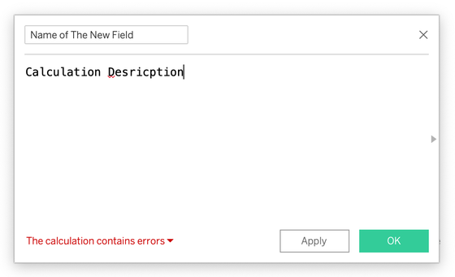
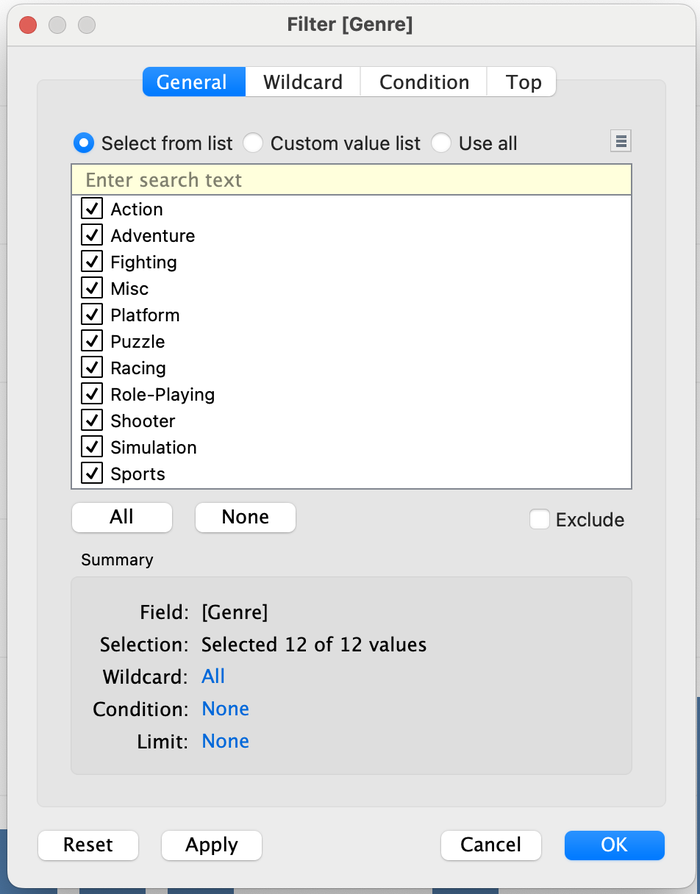

?teacher=1 בכתובת הדף: מה לומר, איפה לעצור ומה לבדוק לפני שממשיכים.בונים מה נבנה במודול הזה. עד עכשיו עבדתם עם השדות שיש בקובץ. כאן אתם יוצרים שדות שלא קיימים בו: מחיר מלא לפני הנחה, סכום ההנחה, אחוז רווח, דגל "נמכר בהנחה", סוף שבוע או יום חול, שעת ערב, עונה, קטגוריית רווחיות ושורת KPI לכל סניף (מעלה, יורד או חדש). בסוף יש לכם סט של כ-30 שדות מחושבים על Scoop & Go, כולם בדוקים מול הנתונים, ומעבדה בדפדפן שמריצה נוסחאות על שורות אמיתיות לפני שאתם נוגעים ב-Tableau.
מה להכין. קובץ scoop_sales_2024_2025.csv טעון ב-Tableau Public (איך מחברים: מודול 2). כדאי להכיר כבר כחול וירוק (מודול 4) ופילטר בסיסי (מודול 6). אם עשיתם את שדה ה-Discount Amount בשיעור הפתיחה, תפגשו אותו כאן שוב, עם ההסבר שמאחוריו.
שדות מחושבים אפשר לבנות בכל Tableau Public. בגרסת העריכה בדפדפן הכול עובד באותה שפה, רק התפריטים בנויים קצת אחרת. שמות התפריטים והכפתורים כאן נבדקו מול Tableau Public 2026.2. בגרסה אחרת ייתכן שהשם שונה מעט. מה שלא עובד ב-Tableau Public (פונקציות SCRIPT_* ו-RAWSQL) יוסבר ברגע שנגיע אליו, בלי תרגילים עליו.
שדה חדש מנוסחה: מה זה ואיפה יוצרים אותו
בקובץ של Scoop & Go יש כמות, מחיר ליחידה, הנחה ורווח. אין בו "מחיר מלא לפני הנחה", אין בו "כמה כסף ניתן בהנחות", ואין בו "סוף שבוע". את כל אלה אתם בונים בעצמכם, ב-Tableau, בלי לגעת בקובץ.
הנה שלוש שורות אמיתיות מהקובץ, והחישוב שנעשה על כל אחת. הנוסחה היא [Quantity] * [Unit Price]. שם שדה נכתב בסוגריים מרובעים. את הנוסחה Tableau מריץ שורה אחרי שורה.
| Order ID | Quantity | Unit Price | Sales | [Quantity] * [Unit Price] | [Full Price] - [Sales] |
|---|---|---|---|---|---|
| SG-00001 | 2 | 20 | 40 | 40 | 0 |
| SG-00034 | 2 | 20 | 36 | 40 | 4 |
| SG-03005 | 3 | 40 | 60 | 120 | 60 |
בשורה השלישית המחיר המלא הוא 120 והלקוח שילם 60: זו הנחה של 50 אחוז, ו-60 שקל ניתנו בהנחה. בשורה השנייה ההנחה היא 10 אחוז: 4 שקל. כדאי לשים לב שהעמודה השישית משתמשת בשדה שבנינו בעצמנו (Full Price). שדה מחושב יכול להישען על שדה מחושב אחר.
- זה הקובץ. יש בו כמות, מחיר ליחידה ומכירות. אין בו שדה "מחיר מלא".
- אתם כותבים נוסחה: כמות כפול מחיר ליחידה.
- Tableau מריץ אותה בכל שורה בנפרד: 2 כפול 20, 2 כפול 20, 3 כפול 40.
- השדה החדש מופיע בחלונית הנתונים, ליד השדות האחרים. הקובץ המקורי נשאר בדיוק כמו שהיה.
איפה יוצרים אותו
יש שלוש דרכים ב-Tableau Public Desktop, וכולן פותחות את אותו חלון:
- בתפריט העליון:
AnalysisואזCreate Calculated Field... - בחלונית
Data, החץ הקטן ליד תיבת החיפוש פותח תפריט. הפקודה הראשונה בו היאCreate Calculated Field...(מתחתיהCreate Parameter..., שנפגוש במודול 10). - קליק ימני (ב-Mac: Control ועוד קליק) על שדה כלשהו בחלונית
Data, ואזCreateואזCalculated Field...(בצילום).
בעריכה בדפדפן אפשר ליצור שדות מחושבים גם כן, בדרך כלל דרך אותו קליק ימני על שדה בחלונית הנתונים. אם אינכם מוצאים את הפקודה, חפשו את השם Create Calculated Field.

Create, Calculated Field.... בצילום הנתונים הם של משחקי וידאו (קובץ אחר). אצלכם יופיעו השדות של Scoop & Go.החלון שנפתח
הדמיה סכמטית
Analysis > Create Calculated Field.... בתיבת השם למעלה כתבנו Full Price (במקום שם ברירת המחדל Calculation1). באזור הנוסחה [Quantity] * [Unit Price], ושמות השדות צבועים בכתום. בתחתית ההודעה The calculation is valid. והכפתורים Apply ו-OK.- תיבת השם בשורה העליונה. בפתיחה כתוב בה
Calculation1. מחליפים לשם ברור, כי זה השם שיופיע בחלונית הנתונים. - אזור הנוסחה. שמות שדות בסוגריים מרובעים, ו-Tableau צובע אותם בכתום (בצילום:
[Quantity]ו-[Unit Price]). תוך כדי הקלדה מוצעת רשימת שדות ופונקציות. אפשר לבחור ממנה. - ההודעה בתחתית.
The calculation is valid.אומרת שהנוסחה כתובה נכון. אם יש שגיאה תופיע שם הודעה אדומה,The calculation contains errors, ואפשר ללחוץ עליה כדי לראות איפה הבעיה. - Apply ו-OK.
Applyשומר ומשאיר את החלון פתוח,OKשומר וסוגר. נוסחה עם שגיאה לא תישמר. - החץ הקטן בצד של החלון פותח רשימת פונקציות עם הסבר ודוגמה לכל אחת. כדאי להציץ בו.

The calculation contains errors.
The calculation is valid. וכפתור OK פעיל. (בצילום: נתוני משחקי וידאו.)בונים את שני השדות הראשונים: Full Price ו-Discount Amount. קובץ ה-CSV טעון, וגיליון חדש פתוח.
- בחרו
AnalysisואזCreate Calculated Field....למה: זו נקודת ההתחלה של כל שדה מחושב. נפתח חלון קטן שצף מעל הגיליון. - בתיבת השם למעלה מחקו את
Calculation1וכתבוFull Price. באזור הנוסחה כתבו:[Quantity] * [Unit Price]
למה: מחיר מלא לפני הנחה הוא כמות כפול מחיר ליחידה. בקובץ העמודה נקראת Unit_Price, אבל Tableau מציג אותה בחלונית הנתונים עם רווח,Unit Price, וכך כותבים אותה בנוסחה. כשהשם נכון הוא נצבע בכתום. - ודאו שבתחתית כתוב
The calculation is valid.ולחצוOK.למה: רק נוסחה תקינה נשמרת, ו-OKשומר וסוגר (Applyשומר ומשאיר את החלון פתוח). השדה החדש יופיע בחלונית הנתונים, בחלק של המדדים מתחת לקו הדק, עם הסמל=#. - צרו שדה שני בשם
Discount Amountעם הנוסחה:[Full Price] - [Sales]
למה: Sales כבר אחרי הנחה. ההפרש בין המחיר המלא למה ששולם הוא כמה כסף ניתן בהנחות. שימו לב שהנוסחה משתמשת בשדה שבניתם הרגע. - פתחו גיליון חדש (
New Worksheet) וגררו אליו אתFull PriceאלTextבכרטיסMarks. אחר כך גררו אלTextגם אתSalesואתDiscount Amount(או החליפו ביניהם, אחד כל פעם).למה: כשאין עוד שדות בגיליון, Tableau מסכם את כל הנתונים למספר אחד, ו-Text מראה אותו. - שבירה מכוונת: ערכו את
Discount Amount(קליק ימני עליו בחלונית הנתונים,Edit...). שנו את[Sales]ל-[Sals]וקראו את ההודעה האדומה. תקנו חזרה ולחצוOK.למה: כדאי לראות איך שגיאה נראית כשהיא קטנה ומכוונת, ולא בפעם הראשונה כשהיא באמצע עבודה.
תוצאה צפויה: SUM(Full Price) = 245,055. SUM(Sales) = 236,820.90. SUM(Discount Amount) = 8,234.10. בדיקה בראש: 245,055 פחות 236,820.9 הוא 8,234.1. Tableau עשוי להציג את המספרים מעוגלים (למשל 236,821 ו-8,234), לפי פורמט ברירת המחדל. ריחוף על המספר או Format יראו את שאר הספרות.
למי שסיים: גררו Discount אל Rows (אם הוא בין המדדים: קליק ימני, Convert to Dimension, כדי שיהיה כחול) והשאירו את Discount Amount על Text. תוצאה צפויה: הנחה 0.1: 1,611.90, הנחה 0.2: 445.20, הנחה 0.5: 6,177.00 (ובהנחה 0: 0). שימו לב: ההנחה של 50 אחוז היא 6,177 מתוך 8,234.10, שלושה רבעים מכל ההנחות שניתנו.
מה צבע וסוג מקבל השדה החדש
Tableau קובע לבד איפה לשים את השדה, לפי סוג הערך שהנוסחה מחזירה. לא אתם בוחרים. הטבלה הזאת תחזור בהמשך עם כל שדה שנבנה:
| הנוסחה מחזירה | איפה השדה נוחת | הצבע כשגוררים אותו | דוגמה |
|---|---|---|---|
| מספר, לכל שורה | בין המדדים (=#) | ירוק, ומסוכם: Full Price | Full Price |
| טקסט | בין הממדים (=Abc) | כחול, בדיד | Day Type |
| אמת או שקר (בוליאני) | בין הממדים | כחול, בדיד, עם שתי כותרות True ו-False | Is Discounted |
| תאריך | בין הממדים | ירוק או כחול, לפי מה שתבחרו בתפריט של הפיל | Month Start |
| תוצאה של חישוב מסכם (SUM ודומיו) | בין המדדים | ירוק, ומופיע כ-AGG(...) | Profit Margin |
בקיצור: המספר נוחת במדדים והטקסט בממדים. כשגוררים את השדה לגיליון הוא הופך לפיל. מספר שהוא בעצם מזהה (כמו מספר הזמנה שהוצא מהטקסט) יהיה מדד וירוק, וצריך להמיר אותו בעצמכם (Convert to Dimension).
"The calculation is valid" לא אומרת שהחישוב נכון. היא אומרת רק שהנוסחה כתובה בצורה ש-Tableau מבין. אפשר לכתוב [Sales] - [Cost] כשהתכוונתם ל-[Sales] - [Discount Amount], והחלון ישמח. לכן בכל שדה חדש בודקים מספר אחד ידוע. לדוגמה כאן: 245,055 פחות 236,820.9 חייב לתת 8,234.1.
שדה מחושב לא משנה את קובץ המקור. הוא נשמר בתוך חוברת העבודה של Tableau, ובכל פעם שהנתונים מתעדכנים הוא מתחשב מחדש. זה ההבדל בין עמודה ב-Excel שמדביקים ערכים לתוכה לבין נוסחה שחיה: אתם משנים נוסחה במקום אחד, וכל הגיליונות שמשתמשים בה מתעדכנים.
יבגני אומר: "למה לא להוסיף עמודה Discount Amount בקובץ ה-CSV עצמו, ולטעון אותו מחדש?" תנו שני יתרונות לשדה מחושב ויתרון אחד לעמודה בקובץ.
יצרתם שדה בשם Full Price עם הנוסחה [Quantity] * [Unit Price]. איפה הוא יופיע בחלונית הנתונים, ומה הצבע שלו כשתגררו אותו לגיליון?
SUM(Full Price)). הצבע נקבע לפי סוג התוצאה, לא לפי העובדה שהשדה חדש או שנוצר בנוסחה. טקסט או אמת/שקר היו נוחתים בממדים ובכחול.בחלון השדה המחושב כתוב The calculation is valid. מה זה מבטיח?
Unit Price, Order Date), אף שבקובץ יש קו תחתון. תגידו את זה לכיתה לפני הנוסחה הראשונה. שם ברירת המחדל בתיבת השם הוא Calculation1, והשדה החדש נוחת בין המדדים עם הסמל =#. תנו להם להקליד את הנוסחה הראשונה בעצמם ולא להעתיק: ההשלמה האוטומטית של השמות היא חלק מהלמידה. אם מישהו מקליד בעברית (מקלדת לא באנגלית) תראו אותיות עבריות בתוך הנוסחה: זו הטעות הנפוצה ביותר בשעה הראשונה.חישוב לכל שורה או חישוב על סיכום
המנהל שואל: "מה אחוז הרווח של הסאנדיי?" ב-Tableau אפשר לקבל שני מספרים שונים מאותה שאלה, ושניהם יראו מקצועיים. רק אחד מהם עונה על השאלה. כאן מבינים למה.
[Quantity] * [Unit Price] נותן מחיר מלא לכל שורה (השדה שבניתם בסעיף הקודם).SUM([Profit]) / SUM([Sales]) נותן לכל סניף את הרווח הכולל שלו חלקי המכירות הכוללות שלו.ננסה על ארבע שורות אמיתיות של סאנדיי. בשורה הראשונה והשנייה הרווח הוא 30 אחוז. בשתי האחרונות יש הפסד (הנחה של 50 אחוז).
| Order ID | Item | Sales | Profit | Profit / Sales |
|---|---|---|---|---|
| SG-00007 | Banana Split | 40 | 12 | 30.0% |
| SG-00091 | Banana Split | 160 | 48 | 30.0% |
| SG-03005 | Banana Split | 60 | -24 | -40.0% |
| SG-03129 | Halva Sundae | 18 | -6 | -33.3% |
- ארבע שורות: מכירות ורווח. שתיים רווחיות ושתיים בהפסד.
- דרך א: קודם מחשבים יחס בכל שורה (רווח חלקי מכירות). זה חישוב ברמת שורה.
- ואז לוקחים ממוצע של ארבעת היחסים: מינוס 3.3 אחוז. השורה של 18 שקל שוקלת כמו השורה של 160 שקל.
- דרך ב: קודם מסכמים. הרווח הכולל הוא 30, המכירות הכוללות הן 278.
- ואז מחלקים: 30 חלקי 278 הם 10.8 אחוז.
- דרך ב עונה על השאלה "כמה רווח יש לנו על כל שקל שנמכר". לכן אחוז רווח של קבוצה מחשבים מסכומים. ממוצע של יחסים נותן מספר אחר, ולא נכון לשאלה הזאת.
שני החישובים נכתבים ב-Tableau בקלות, ושניהם "valid". ההבדל הוא רק מה מסכמים ומתי. עכשיו עושים את זה על כל הנתונים.
Profit Margin מול Avg Row Margin, לפי קטגוריה.
- צרו שדה מחושב בשם
Profit Margin:SUM([Profit]) / SUM([Sales])
למה: סכום הרווח חלקי סכום המכירות הוא אחוז הרווח של הקבוצה. הנוסחה מסכמת קודם, ולכן היא חישוב מסכם. - בחלונית הנתונים: קליק ימני על
Profit Margin,Default Properties,Number Format...,Percentageעם ספרה אחת אחרי הנקודה.למה: כך השדה מוצג כאחוז בכל מקום שבו משתמשים בו, ואין צורך לעצב מחדש בכל גיליון. - צרו שדה שני בשם
Avg Row Margin:AVG([Profit] / [Sales])
למה: זו הדרך השנייה, יחס לכל שורה ואז ממוצע. נעצב אותו גם כאחוז באותה דרך. שימו לב שהחישוב בתוך ה-AVG הוא ברמת שורה, וה-AVG מסכם אותו: זה חוקי. - גיליון חדש. גררו
CategoryאלRows, אתProfit MarginאלColumns, ואתAvg Row MarginאלColumns, מימין לראשון.למה: כך רואים את שני הגרפים זה ליד זה, אותה קטגוריה בשורה אחת. בכרטיס Marks כדאי להוסיף אתProfit MarginאלLabelכדי לראות את המספרים. - כדי לראות את הסכום הכללי, גררו את
Categoryהחוצה מ-Rowsובדקו את שני המספרים.למה: בלי ממד בגיליון יש סימן אחד לכל הנתונים. שימו לב איך אותו שדה מחושב נותן ערך אחר כשמשנים את הממדים. זה טבעו של חישוב מסכם.
תוצאה צפויה (Profit Margin / Avg Row Margin):
| Category | Profit Margin | Avg Row Margin |
|---|---|---|
| Cones | 52.9% | 51.7% |
| Cups | 52.0% | 50.8% |
| Drinks | 67.3% | 68.7% |
| Sticks | 51.6% | 51.6% |
| Sundaes | 28.2% | 25.4% |
| הכול (בלי Category) | 51.0% | 52.6% |
התוצאה המדויקת הכללית היא 120,722.9 חלקי 236,820.9, שהם 0.5098. בסאנדיי ההבדל הכי בולט: 28.2 מול 25.4, כי שם יושבות כל שורות ההפסד.
ממוצע של יחסים. הטעות הנפוצה בשדות מחושבים: להשתמש ב-AVG([Profit] / [Sales]) ולקרוא לזה "אחוז הרווח". הוא נותן משקל שווה לשורה של 8 שקל ולשורה של 160 שקל. לכל יחס של קבוצה, כמו אחוז רווח, אחוז הנחה או מחיר ממוצע ליחידה, מסכמים את המונה, מסכמים את המכנה, ורק אז מחלקים.
אותו שדה, כל פעם בגרף אחר
חישוב מסכם מחושב מחדש לכל סימן בגרף, לפי הממדים שיש בו. אותו Profit Margin נותן שלוש תמונות שונות על אותם נתונים:
| מה יש בגיליון | מה Tableau מסכם בכל סימן | מה רואים |
|---|---|---|
| שום ממד | כל 6,575 השורות | סימן אחד: 51.0% |
| Channel | שורות של כל ערוץ בנפרד | App 50.2%, Delivery 51.9%, Walk-in 51.0% |
| Branch | שורות של כל סניף בנפרד | 9 סימנים, מ-48.3% (Rehovot Mall) עד 52.0% (Tel Aviv Dizengoff) |
אפשר לראות ב-Tableau שהשדה על המדף נקרא AGG(Profit Margin). ה-AGG אומר: "זה כבר מסוכם, לא מסכמים שוב". תוצאה של חישוב מסכם היא תמיד מדד, וירוקה.
ויש בונוס: הסכום הכללי של חישוב מסכם מחושב נכון. אם תפעילו Analysis > Totals > Show Column Grand Totals, השורה "Grand Total" של Profit Margin תראה 51.0%, כלומר סך הרווח חלקי סך המכירות, ולא סכום או ממוצע של האחוזים שבשורות.
השאלה "באיזו רמה מחשבים?" חשובה יותר מכל פונקציה. חישוב ברמת שורה הוא כמו עמודה חדשה בקובץ: הוא לא משתנה כשמשנים את הגרף. חישוב מסכם הוא כמו שאלה על קבוצה: התשובה תלויה בקבוצה. כשתראו מספר מוזר, השאלה הראשונה היא באיזו רמה הוא חושב.
בדוחות כספיים, אחוז רווח גולמי הוא תמיד הרווח הגולמי חלקי ההכנסות של התקופה, כלומר יחס של סכומים. כך מחשבים גם בכלי BI אחרים: ב-SQL זה SUM(profit) / SUM(sales) ולא AVG(profit / sales). הכלל זהה בכל מקום, לא רק ב-Tableau.
מוסיפים את Branch ל-Rows לצד Category. מה קורה לערך של Profit Margin בכל סימן, ולמה לא צריך ליצור שדה חדש?
איזה מהשדות המחושבים האלה הוא ברמת שורה?
בגרף של Profit Margin לפי Category מוסיפים Grand Total. מה יוצג בו?
Analysis > Totals > Show Column Grand Totals ומראה 51.0% (120,722.9 חלקי 236,820.9). שדה שהנוסחה שלו כבר מסכמת מופיע על המדף כ-AGG(...)."Cannot mix aggregate and non-aggregate": השגיאה הכי נפוצה
המנהל מבקש שדה אחד של מכירות הסאנדיי בלבד. כותבים את הנוסחה הכי טבעית, ו-Tableau מסרב. זו השגיאה שכל מי שבונה שדות מחושבים פוגש בשבוע הראשון. כשמבינים מה היא אומרת, מתקנים אותה בשניות.
הנוסחה שנראית הגיונית:
IF [Category] = "Sundaes" THEN SUM([Sales]) END
הדמיה סכמטית. בתחתית החלון מופיע באדום The calculation contains errors עם חץ קטן. לחיצה עליו מראה את הפירוט, וזה הנוסח שלו בגרסה 2026.2.
SUM([Sales]) / [Quantity], כי SUM מסכם הרבה שורות ו-Quantity הוא של שורה אחת.בנוסחה למעלה, התנאי [Category] = "Sundaes" צריך תשובה אחת לכל שורה: כן או לא. התוצאה SUM([Sales]) צריכה הרבה שורות כדי להתחשב. הם לא מדברים באותה רמה. ההנפשה מראה איפה זה נתקע, ואיך מתקנים.
- הנוסחה בודקת תנאי בכל שורה: האם הקטגוריה היא Sundaes? כאן אין בעיה, לכל שורה יש תשובה.
- אבל אחרי ה-THEN יש SUM, שצריך קבוצה של שורות כדי לסכם. אי אפשר לסכם "שורה אחת בלי חברות". Tableau עוצר ומציג את השגיאה.
- התיקון: מכניסים את ה-SUM החוצה. עכשיו ה-IF מחזיר לכל שורה את המכירות שלה (או Null כשהתנאי לא נכון), והכול ברמת שורה.
- ורק אז SUM מסכם את מה שנשאר: 40 ועוד 60. ה-Null לא נספרים בסכום.
ארבע דרכים לתקן, ומתי כל אחת
1. מכניסים את ה-SUM החוצה (הכי נפוץ)
SUM( IF [Category] = "Sundaes" THEN [Sales] END )
הכול ברמת שורה בפנים, וסיכום אחד בחוץ. עובד בכל גרף. זה התיקון הראשון שכדאי לנסות.
2. הופכים את התנאי למסכם עם ATTR
IF ATTR([Category]) = "Sundaes" THEN SUM([Sales]) END
ATTR מחזיר את הערך אם כל השורות בסימן שותפות בו, ואחרת כוכבית (*). עובד כש-Category נמצא בגרף, כך שיש ערך אחד לכל סימן.
3. מסכמים גם את החלק השני
SUM([Sales]) / SUM([Quantity])
במקום SUM([Sales]) / [Quantity]. כשיש יחס, שני הצדדים באותה רמה.
4. מחשבים ברמה קבועה (LOD)
אפשר לחשב ערך מסוכם ברמת פירוט קבועה ולשלב אותו עם כל שורה. הכלי נקרא FIXED ונלמד במודול 10. כאן לא צריך אותה.
הכללים הרשמיים בקצרה (מתוך התיעוד של Tableau על חישובים מסכמים):
- אי אפשר לשלב ערך מסוכם וערך לא מסוכם.
SUM([Price]) * [Items]לא תקין.SUM([Price] * [Items])ו-SUM([Price]) * SUM([Items])תקינים. - מספר קבוע מתאים לשני הצדדים:
SUM([Price]) * 7ו-SUM([Price] * 7)שניהם תקינים. - הארגומנטים של פונקציה אחת צריכים להיות כולם מסוכמים או כולם לא.
MAX(SUM([Sales]), [Profit])לא תקין.MAX(SUM([Sales]), SUM([Profit]))תקין. - תוצאה של חישוב מסכם היא תמיד מדד, והיא מוצגת כ-
AGG(...). אי אפשר לסכם אותה שוב.
שוברים ומתקנים: מכירות הסאנדיי.
- צרו שדה בשם
Sundaes Salesעם הנוסחה:IF [Category] = "Sundaes" THEN SUM([Sales]) END
למה: רוצים לראות את השגיאה בעצמכם. בתחתית יופיעThe calculation contains errors. לחצו עליו וקראו:Cannot mix aggregate and non-aggregate comparisons or results in 'IF' expressions. נוסחה עם שגיאה לא תישמר. - החליפו את הנוסחה בתיקון 1 ולחצו
OK:SUM( IF [Category] = "Sundaes" THEN [Sales] END )
למה: ה-IF עכשיו ברמת שורה והסיכום מחוץ לו. - גיליון חדש:
CategoryאלRows, ו-Sundaes SalesאלText. אחר כך הוציאו אתCategoryמהגיליון.למה: רוצים לראות את הערך בכל קטגוריה, ואחר כך כסכום כולל. בקטגוריות האחרות השדה מחזיר Null, ולכן לא יוצג בהן מספר. - צרו שדה נוסף בשם
Sundaes Sales ATTRעם תיקון 2:IF ATTR([Category]) = "Sundaes" THEN SUM([Sales]) END
למה: להשוות בין שתי דרכים. החזירו אתCategoryל-Rows, ובדקו שהתוצאה זהה. אחר כך הוציאו אותו שוב ובדקו מה קורה כשהגיליון לא מפרק לפי קטגוריה. - צרו
Revenue per UnitעםSUM([Sales]) / SUM([Quantity]). נסו גםSUM([Sales]) / [Quantity]כדי לראות את השגיאה השנייה.למה: אותה שגיאה בלבוש אחר. כאן הפירוט הואCannot mix aggregate and non-aggregate arguments with this function.והתיקון הוא תיקון 3.
תוצאה צפויה: Sundaes Sales = 47,037.20 בשורה של Sundaes, וגם כשאין Category בגיליון. Revenue per Unit = 236,820.9 חלקי 11,426 = 20.73 שקל ליחידה (20.7265). בדיקה: מכירות הסאנדיי הן 47,037.2 מתוך 236,820.9, כלומר כ-19.9 אחוז מהמכירות.
ATTR שמחזיר כוכבית. בתיקון 2 הכול תלוי בכך ש-Category נמצא בגיליון. אם מוציאים אותו, יש מאות שורות בסימן, ATTR מחזיר כוכבית (*), והתנאי כבר לא מתקיים. השדה לא נשבר ולא מציג שגיאה, הוא פשוט מראה לא מה שציפיתם. לכן תיקון 1 עדיף כמעט תמיד: הוא נכון בכל גרף.
אותה בעיה קיימת ב-SQL, שלמדתם בחלק 2 של המפגש המסכם: SELECT category, SUM(sales) ... GROUP BY. עמודה שלא בקבוצה ולא עטופה בפונקציה מסכמת מחזירה שגיאה ("must appear in the GROUP BY clause or be used in an aggregate function" במנועים רבים). אותו כלל, שפה אחרת: בכל שאילתה צריך לדעת מה ברמת שורה ומה ברמת קבוצה.
למה SUM([Sales]) / [Quantity] לא תקין, אבל SUM([Sales]) / 100 כן?
איזו נוסחה תקינה ומחזירה את סך המכירות של Delivery בלבד?
מה ההודעה "Cannot mix aggregate and non-aggregate" אומרת בפועל?
The calculation contains errors, ובפירוט Cannot mix aggregate and non-aggregate comparisons or results in 'IF' expressions (ל-IF) או Cannot mix aggregate and non-aggregate arguments with this function. (לחלוקה ולפונקציות). פתוח: ההתנהגות של ATTR בלי Category בגיליון (כוכבית, תנאי שלא מתקיים). כדאי לנסות אותה פעם אחת לפני השיעור.פונקציות: שש משפחות, ומתחילים במספרים
עד עכשיו כתבתם נוסחאות עם כפל, חיסור וחילוק. השלב הבא הוא פונקציות: פקודות מוכנות. אין צורך לזכור מאות. יש שש משפחות, ובכל אחת כעשר פונקציות שתשתמשו בהן כל הזמן.
🔢 מספרים
עיגול, חיתוך, ערך מוחלט, שארית.
ROUND FLOOR CEILING ABS DIV
סעיף 4
🔁 המרת סוג
מספר לטקסט, טקסט למספר, טקסט לתאריך.
STR INT FLOAT DATE
סעיף 4
🔤 טקסט
לחתוך, לחפש, לנקות, להחליף.
LEFT SPLIT CONTAINS REPLACE TRIM
סעיף 5
📅 תאריך
לחתוך לחודש, לקרוא יום בשבוע, למדוד מרחק.
DATETRUNC DATEPART DATEDIFF DATEADD
סעיף 6
🧭 לוגיקה
להחליט: אם זה, אז זה.
IF CASE IIF IFNULL ZN
סעיף 7
∑ מסכמות
לצמצם הרבה שורות למספר אחד.
SUM AVG COUNTD MEDIAN ATTR
סעיף 8
כל משפחה בסעיף משלה: טבלה של הפונקציות השימושיות, דוגמה על Scoop & Go עם התוצאה, ושדה שבונים. בסעיף הזה: מספרים והמרות.
פונקציות מספרים
| פונקציה | מה היא עושה | דוגמה על Scoop & Go | תוצאה |
|---|---|---|---|
ROUND(x, n) | מעגלת ל-n ספרות אחרי הנקודה | ROUND(SUM([Profit]) / SUM([Sales]), 3) | 0.510 (מ-0.5098) |
FLOOR(x) | מעגלת כלפי מטה למספר שלם | FLOOR(64.8), וגם FLOOR([Sales] / 20) * 20 שהופך 64.8 ל-60 | 64 ו-60 |
CEILING(x) | מעגלת כלפי מעלה | CEILING([Sales]) בשורה של 23.4 | 24 |
ABS(x) | ערך מוחלט, בלי סימן | ABS([Profit]) בשורה של הפסד 24 | 24 |
SIGN(x) | מחזירה -1, 0 או 1 לפי הסימן | SIGN([Profit]) על שורת הפסד, על שורה ללא רווח, על שורה רווחית | -1, 0, 1 |
DIV(a, b) ו-a % b | מנה שלמה ושארית של שני מספרים שלמים | DIV(11, 2) ו-11 % 2. בקובץ: [Order Hour] % 12 הופך 19 ל-7 (שעון של 12 שעות) | 5, 1 ו-7 |
POWER(x, y), SQRT(x) | חזקה ושורש | POWER(5, 3), SQRT(25) | 125 ו-5 |
MIN(a, b), MAX(a, b) | הקטן או הגדול משני ערכים, ברמת שורה (עם שני ארגומנטים) | MIN([Sales], 100) חוסמת שורה של 160 ל-100 | 100 |
ZN(x) | מחליפה Null באפס | נסביר בסעיף 7 | 0 |
שימו לב: MIN ו-MAX עם שני ערכים הן פונקציות של שורה. עם ערך אחד, MIN([Sales]), הן פונקציות מסכמות שמחזירות את הקטן ביותר מכל השורות. אותו שם, שתי משמעויות, ו-Tableau מבחין לפי מספר הארגומנטים.
המרת סוג
כל שדה ב-Tableau הוא מסוג אחד: טקסט, מספר שלם, מספר עשרוני, אמת/שקר, תאריך או תאריך ושעה. לפעמים צריך להפוך סוג אחד לאחר. השינוי הפשוט נעשה בלחיצה על הסמל של השדה בחלונית הנתונים (Change Data Type). כשצריך לעשות את זה בתוך נוסחה, משתמשים בפונקציות ההמרה:
| פונקציה | מה היא עושה | דוגמה | תוצאה |
|---|---|---|---|
STR(x) | הופכת לטקסט | STR([Order Hour]) + ":00" בשורה של שעה 19 | "19:00" |
INT(x) | הופכת למספר שלם, חותכת (לא מעגלת) | INT(2.9), INT(-9.7), וגם INT(SPLIT([Order ID], "-", 2)) על SG-00007 | 2, -9 ו-7 |
FLOAT(x) | הופכת למספר עשרוני | FLOAT(3) | 3.000 |
DATE(x) | הופכת טקסט או תאריך-ושעה לתאריך | DATE("2025-05-12") | 12 במאי 2025 |
DATEPARSE(format, text) | קוראת טקסט בתבנית מדויקת שאתם מגדירים | DATEPARSE("dd/MM/yyyy", "15/01/2025") | 15 בינואר 2025 |
INT(2.9) נותן 2 ו-ROUND(2.9, 0) נותן 3. זה ההבדל בין חיתוך לעיגול. וכשרוצים שהמספר 7 יהיה "SG-00007" או "19:00", זה כבר עניין של STR. תאריכים יקבלו סעיף משלהם בעוד רגע.
שלושה שדות: מדרגות מחיר, תווית שעה, ורווח ליחידה.
- צרו
Line Band 20:FLOOR([Sales] / 20) * 20
למה: מחלקים ב-20, חותכים לשלם, ומכפילים חזרה. כל שורה מקבלת את גבול המדרגה שלה: 0, 20, 40 וכן הלאה. - גיליון חדש. גררו את
Line Band 20אלColumns. הוא ירוק, כי הוא מספר. לחצו על החץ של הפיל ובחרוDiscrete. כספירה, גררוOrder IDאלRowsובחרוMeasureואזCount (Distinct)או סתםCount.למה: רוצים עמודה לכל מדרגה (כחול, בדיד) וספירת שורות מעליה. הקובץ הזה מכיל שורה אחת לכל Order ID, ולכן Count ו-Count (Distinct) נותנים אותו דבר. - צרו
Hour Label:STR([Order Hour]) + ":00"
למה: מתאימים את השעה לתצוגה: 19 הופך ל-19:00. הפונקציה STR הופכת את המספר לטקסט כדי שאפשר יהיה לחבר אותו לטקסט אחר. - גיליון חדש:
Hour LabelאלColumnsו-CountשלOrder IDאלRows.למה: מקבלים את התפלגות הזמנות לפי שעה ורואים איפה השיא. - צרו
Profit per Unit:SUM([Profit]) / SUM([Quantity]). גררוCategoryאלRowsואת השדה אלColumns.למה: יחס של סכומים, כמו בסעיף 2. כמה רווח משאירה כל יחידה שנמכרת.
תוצאה צפויה.
מדרגות מחיר (מספר שורות בכל מדרגה, בסך הכול 6,575):
| Line Band 20 | 0 | 20 | 40 | 60 | 80 | 100 | 120 | 140 | 160 |
|---|---|---|---|---|---|---|---|---|---|
| שורות | 1,639 | 2,682 | 1,304 | 608 | 147 | 125 | 28 | 32 | 10 |
שעות: 10:00 הוא הנמוך, 91 שורות. השיא ב-21:00: 938 שורות. אחריו 20:00 עם 859 ו-22:00 עם 750.
Profit per Unit: Cones 10.28, Cups 10.48, Drinks 13.22, Sticks 6.40, Sundaes 10.19. בכל הנתונים: 10.57 (120,722.9 חלקי 11,426).
טקסט ממוין לפי א-ב. כל שעות הפתיחה בקובץ הן דו-ספרתיות (10 עד 23), ולכן 10:00 עד 23:00 מסתדרות נכון. אילו הקובץ כלל גם 9, התווית "9:00" הייתה מופיעה אחרי "23:00", כי בטקסט התו "9" גדול מהתו "2". כשמשהו חייב להיות בסדר מספרי, שמרו את המספר כמספר ורק את התווית הציגו כטקסט, או כתבו שעה עם אפס מוביל.
עיגול בנוסחה ועיגול בתצוגה זה לא אותו דבר. Default Properties ואז Number Format רק משנים איך המספר מוצג. הערך עצמו נשאר מדויק, ובחישוב המשך Tableau משתמש בערך המדויק. ROUND משנה את הערך עצמו. אם אתם רוצים ש-0.5098 ייראה כ-51.0%, שנו פורמט. אם אתם רוצים להשוות לסף עגול, השתמשו ב-ROUND.
רוב השדות המחושבים בעבודה אמיתית הם פשוטים: הפרש, יחס, עיגול, תווית. מי שמכיר חמש-שש פונקציות של מספרים והמרה כבר פותר הרבה ממה שמבקשים. אל תמהרו לנוסחאות ארוכות: נוסחה קצרה קל לבדוק, וקל יותר להסביר למי שיפתח את החוברת אחריכם.
בנוסחה של Tableau הסוג חשוב. אי אפשר לחבר מספר לטקסט בלי המרה: [Order Hour] + ":00" לא תקין, ו-STR([Order Hour]) + ":00" תקין. כשתקבלו הודעת שגיאה על סוגים שלא מתאימים, בדקו קודם אם חסרה המרה כמו STR.
מה הערך של FLOOR([Sales] / 20) * 20 בשורה שבה Sales הוא 64.8?
FLOOR([Sales]) בלבד, ו-80 מ-CEILING של 3.24 כפול 20.ההבדל בין INT(2.9) ל-ROUND(2.9, 0) הוא:
איך תהפכו את אחוז ההנחה 0.1 לתווית "10%"? כתבו נוסחה.
STR(ROUND([Discount] * 100, 0)) + "%". כופלים ב-100, מעגלים כדי שלא יישארו זנבות עשרוניים מוזרים, הופכים לטקסט ומחברים את הסימן. התוצאה: "10%", "20%", "50%", ו-"0%" בלי הנחה. אפשר גם להשתמש בעיצוב אחוזים בלי נוסחה, אבל תווית טקסט נחוצה כשרוצים להוסיף עוד טקסט סביב המספר.פונקציות טקסט: לחתוך, לחפש ולנקות
מספר ההזמנה של Scoop & Go הוא טקסט, SG-00007. שם הסניף הוא טקסט ארוך. כשצריך רק חלק מהם, למשל המספר עצמו, או כל מי ששם הסניף שלו כולל "Pop-up", משתמשים בפונקציות טקסט.
הנה הפונקציות השימושיות. בתוך הנוסחה טקסט כתוב בין גרשיים כפולים, "Pop-up", ושם שדה בסוגריים מרובעים, [Branch]. הספירה של מקומות בטקסט מתחילה ב-1.
| פונקציה | מה היא עושה | דוגמה על Scoop & Go | תוצאה |
|---|---|---|---|
LEFT(s, n), RIGHT(s, n) | n התווים הראשונים או האחרונים | LEFT([Branch], 3) על Haifa German Colony | "Hai" |
MID(s, start, n) | n תווים החל ממקום start | MID([Item], 1, 5) על Milkshake | "Milks" |
LEN(s) | אורך הטקסט | LEN("Milkshake") | 9 |
FIND(s, sub) | המקום הראשון של sub בתוך s, ו-0 אם אין | FIND([Branch], " ") על Eilat Promenade | 6 |
SPLIT(s, delimiter, n) | חותכת לפי מפריד ומחזירה את החלק מספר n. מספר שלילי סופר מהסוף | SPLIT([Order ID], "-", 2) על SG-00007, וגם SPLIT([Branch], " ", -1) על Tel Aviv Port | "00007" ו-"Port" |
REPLACE(s, old, new) | מחליפה טקסט אחד באחר | REPLACE([Item], " Cup", "") על Pistachio Cup | "Pistachio" |
CONTAINS(s, sub) | אמת אם הטקסט כולל את sub | CONTAINS([Branch], "Pop-up") | True ל-Ashdod Beach Pop-up בלבד |
STARTSWITH, ENDSWITH | אמת אם הטקסט מתחיל או מסתיים כך | STARTSWITH([Item], "Choco") | True ל-Chocolate Cup ול-Choco Stick |
UPPER, LOWER, PROPER | אותיות גדולות, קטנות, ראשונה גדולה בכל מילה | UPPER("Hai") | "HAI" |
TRIM(s) | מוריד רווחים בהתחלה ובסוף | TRIM(" Eilat ") | "Eilat" |
ויש משפחה שלמה של ביטויים רגולריים, REGEXP_EXTRACT ודומיה, לחיפוש תבניות. למשל REGEXP_EXTRACT([Order ID], "([0-9]+)") מחזירה "00007" מתוך SG-00007: הסוגריים בתבנית מסמנים מה להחזיר. הם יקבלו מקום במודול 16.
שני דברים שכדאי לדעת מראש: SPLIT מחזירה תמיד טקסט ("00007", לא 7), ו-CONTAINS עשויה להבדיל בין אותיות גדולות לקטנות, תלוי במקור הנתונים. כדי שלא תהיו תלויים בזה, אפשר לכתוב CONTAINS(UPPER([Branch]), "POP-UP").
- הטקסט המלא הוא SG-00007. אנחנו רוצים רק את המספר.
- SPLIT מחפשת את המפריד שביקשנו: המקף.
- היא חותכת את הטקסט לחלקים משני צידי המקף. מבקשים את החלק השני: "00007". זה עדיין טקסט.
- INT הופכת את הטקסט למספר, והאפסים בהתחלה נעלמים: 7. עכשיו אפשר למיין, לסכם ולהשוות.
ארבעה שדות טקסט. בכל אחד: בנו, בדקו מול התוצאה הצפויה.
- צרו
Order Number:INT(SPLIT([Order ID], "-", 2))
למה: מוציאים את המספר מתוך מזהה הטקסט. SPLIT חותכת לפי מקף, ו-INT הופכת את התוצאה למספר. גררו אותו אלText. הוא יופיע כ-SUM(Order Number): קליק ימני על הפיל,Measure, ובחרוMaximum. - צרו
Branch Tag:UPPER(LEFT([Branch], 3))
גררוBranch TagאלRowsואתOrder IDאלTextכ-Count, וספרו כמה ערכים יש בעמודה.למה: רוצים קיצור של שלוש אותיות לכל סניף, ובודקים שהקיצור לא איחד סניפים שונים. - תיקון: ערכו את
Branch Tagלנוסחה:UPPER(LEFT([Branch], 3)) + "-" + UPPER(LEFT(SPLIT([Branch], " ", -1), 3))
למה: מוסיפים את שלוש האותיות הראשונות של המילה האחרונה בשם הסניף.-1אומר "החלק האחרון". - צרו
Is Pop-up:CONTAINS([Branch], "Pop-up"). גררו אותו אלColorבגרף עמודות שלSUM(Sales)לפיBranch.למה: שדה בוליאני (אמת או שקר) הוא הדרך הקצרה לצבוע סניף אחד באופן שונה משאר הרשת. - צרו
Is Chocolate:STARTSWITH([Item], "Choco"). גררו אלRowsעםItemברמה נמוכה יותר, או אלColorשל גרף לפי Item.למה: לראות אילו פריטים שדה כזה "תופס". נראה שהחיפוש רחב מהמתוכנן.
תוצאה צפויה:
MAX(Order Number)= 6,575.- בגרסה הראשונה של
Branch Tagיש 8 ערכים במקום 9 סניפים: TEL מכיל 2,305 שורות, כי Tel Aviv Dizengoff (1,235) ו-Tel Aviv Port (1,070) קיבלו את אותו קיצור. השאר: JER 970, EIL 866, HAI 758, NET 732, BEE 525, REH 280, ASH 139. - בגרסה המתוקנת יש 9 ערכים, בהם TEL-DIZ, TEL-POR, BEE-MAL, REH-MAL ו-ASH-POP.
Is Pop-up= True בסניף אחד, Ashdod Beach Pop-up: 139 שורות ו-5,304.50 מכירות.Is Chocolate= True ב-שני פריטים: Chocolate Cup (485 שורות) ו-Choco Stick (398). ביחד 883 שורות.
קיצור שמאחד בטעות. כל קיצור של טקסט (שלוש אותיות ראשונות, מילה ראשונה) עלול לאחד שני ערכים שונים. אצלנו "TEL" הפך שני סניפים לאחד, וכל הגרף נתן מספרים לא נכונים בלי שום שגיאה. הכלל: אחרי כל שדה טקסט שחותך, בדקו COUNTD (או ספרו ערכים) מול מספר הערכים המקוריים. כאן 8 מול 9, וזה מספיק כדי לדעת שמשהו התאחד.
החיפוש רחב מהמתוכנן. STARTSWITH([Item], "Choco") תפס גם את Choco Stick וגם את Chocolate Cup. כשאתם מחפשים תת-טקסט, בדקו איזה ערכים נתפסו, ובמידת הצורך החמירו: [Item] = "Chocolate Cup", או חפשו מחרוזת ארוכה יותר.
עברית בתוך נוסחה. כל השדות והתוויות בתרגילים כאן באנגלית. מותר לכתוב טקסט בעברית בין גרשיים בתוך נוסחה, אבל בעורך הנוסחאות שהוא משמאל לימין השילוב של עברית ואנגלית עלול להיראות מבולבל, ואז קשה לראות מה בדיוק כתבתם. אם בוחרים בכל זאת בתוויות בעברית, הקלידו אותן קצר ובדקו את התוצאה בגרף. בגרסה שלכם ייתכן שהתצוגה שונה.
בנתונים של עסקים אמיתיים, שמות מגיעים עם רווחים בסוף, עם אותיות גדולות וקטנות מעורבות ועם איות שונה לאותו לקוח. לפני שמנתחים, מנקים בשדה מחושב: TRIM, UPPER או PROPER, ואם צריך REPLACE. הניקוי לא נוגע בקובץ המקורי.
איזה קיצור היה פותר את בעיית "TEL" בלי לחתוך שם הסניף בכלל?
מה מחזירה SPLIT([Order ID], "-", 2) על SG-00041, ומה הסוג של התוצאה?
מוסיפים שדה CONTAINS([Branch], "Mall"). כמה סניפים יקבלו True?
Branch Code (עם רווח), ואפשר להשתמש בו בשאלת המחשבה.תאריכים ושעות: סוף שבוע, עונה ומרחק בימים
בקובץ של Scoop & Go יש תאריך ושעה בלבד. אין בו "סוף שבוע" ואין בו "קיץ". ובכל זאת מנהל הרשת ישאל בדיוק על זה: מתי באים הלקוחות? כאן בונים את השדות שעונים.
הפונקציות של תאריכים עושות חמישה דברים: חותכות תאריך לרמה (חודש, רבעון), קוראות חלק ממנו, מודדות מרחק בין שני תאריכים, מזיזות תאריך, או קוראות טקסט ומחזירות תאריך. בתוך נוסחה תאריך קבוע נכתב בין סולמיות: #2025-05-12#.
| פונקציה | מה היא עושה | דוגמה | תוצאה |
|---|---|---|---|
DATETRUNC('month', d) | חותכת לתחילת התקופה. מחזירה תאריך | DATETRUNC('month', #2025-05-12#) | 1.5.2025 |
DATEPART('month', d) | קוראת חלק מהתאריך. מחזירה מספר שלם | DATEPART('month', #2025-05-12#), DATEPART('quarter', ...) | 5 ו-2 |
DATEPART('iso-weekday', d) | יום בשבוע לפי תקן ISO: שני הוא 1 ו-ראשון הוא 7 | DATEPART('iso-weekday', #2025-05-12#). ה-12 במאי 2025 היה יום שני. | 1 |
DATENAME('weekday', d) | שם החלק, כטקסט | DATENAME('weekday', #2025-05-12#) | "Monday" (השפה לפי ההגדרות אצלכם) |
YEAR(d), MONTH(d), DAY(d) | קיצורים של DATEPART | YEAR(#2025-05-12#) | 2025 |
DATEDIFF('day', d1, d2) | כמה גבולות של יחידה עוברים בין שני תאריכים | DATEDIFF('day', #2024-01-01#, #2025-12-31#) | 730 |
DATEADD('month', n, d) | מזיזה תאריך ב-n יחידות | DATEADD('month', 9, #2025-05-12#) | 12.2.2026 |
MAKEDATE(y, m, d) | בונה תאריך משלושה מספרים | MAKEDATE(2025, 6, 1) | 1.6.2025 |
TODAY(), NOW() | התאריך או הזמן של היום | שימוש: DATEDIFF('day', [Order Date], TODAY()) | משתנה |
שימו לב להבדל שקל לפספס: DATETRUNC מחזירה תאריך אמיתי (אפשר לשים אותו על ציר זמן ירוק), ו-DATEPART מחזירה מספר (5, לא "מאי").
הערה על ספירת ימים: DATEDIFF סופרת גבולות, לא פרקי זמן שלמים. DATEDIFF('month', #2025-01-31#, #2025-02-01#) נותנת 1, למרות שעבר יום אחד, כי עברנו את הגבול בין ינואר לפברואר. ובשבועות התוצאה תלויה ביום שבו השבוע מתחיל. לכן אצלנו יום בשבוע נקרא עם 'iso-weekday', שבו שבוע תמיד מתחיל ביום שני ואין תלות בהגדרות.
איזה יום הוא סוף שבוע, ומה רואים בנתונים
ב-Scoop & Go עסק שיושבים בו בערב של סוף שבוע בישראל: שישי ושבת. בשדה ISO אלה היום החמישי והשישי. הגרף כאן הוא בדיקה לפני שבונים את השדה: סכום המכירות לכל יום בשבוע, מחושב על 6,575 השורות. בגרף רואים שני עמודים גבוהים, 5 ו-6.
סמנו אילו ימים (לפי ISO: 1 = שני ... 7 = ראשון) נכללים ב"סוף שבוע". ההדמיה מחשבת מכל 6,575 השורות את מספר השורות, המכירות, ימי המסחר והמכירות ליום. זה אותו חישוב שה-IF ו-COUNTD עושים בשדות המחושבים.
סוף שבוע, מכירות ליום, עונה וציר חודשים.
- צרו שדה בדיקה בשם
ISO Weekday:DATEPART('iso-weekday', [Order Date]). גררו אותו אלColumns(הפכו אותו ל-Discrete) ו-SUM(Sales)אלRows.למה: לפני שמגדירים סוף שבוע בודקים שמספרי הימים מתנהגים כמו שחשבנו. אם משהו שונה אצלכם, אל תמשיכו. - צרו
Day Type:// Israel weekend: Friday and Saturday IF DATEPART('iso-weekday', [Order Date]) IN (5, 6) THEN "Weekend" ELSE "Weekday" ENDלמה: הנוסחה בודקת בכל שורה אם היום הוא 5 או 6. השורה הראשונה היא הערה, והיא לא משפיעה על החישוב. - גיליון חדש:
Day TypeאלRows,SUM(Sales)אלColumns,CountשלOrder IDאלLabel.למה: כמה כסף וכמה שורות בכל סוג יום. - צרו
Sales per Trading Day:SUM([Sales]) / COUNTD([Order Date]). הציבו אותו במקוםSUM(Sales).למה: יש חמישה ימי חול ושני ימי סוף שבוע בכל שבוע, אז סכום פשוט מוטה. חלוקה במספר הימים השונים בכל קבוצה נותנת מכירות ליום, וזה השוואה הוגנת. - צרו
Season:IF MONTH([Order Date]) IN (12, 1, 2) THEN "Winter" ELSEIF MONTH([Order Date]) IN (3, 4, 5) THEN "Spring" ELSEIF MONTH([Order Date]) IN (6, 7, 8) THEN "Summer" ELSE "Autumn" END
למה: עונה לפי חודשי לוח. אפשר להחליט אחרת, אבל מחליטים פעם אחת ובנוסחה, כדי שכולם ישתמשו באותו חיתוך. גררו אלRowsעםSUM(Sales)ב-Columns. - צרו
Month Start:DATETRUNC('month', [Order Date]). גררו אלColumns, לחצו על חץ הפיל ובחרוExact Dateמהחלק הירוק של הרשימה (Continuous).SUM(Sales)אלRows.למה: ציר זמן רציף עם נקודה לכל חודש, ללא תלות בשנה. בדיוק מה שמסכם פונקציית חיתוך.
תוצאה צפויה. גרף ה-ISO Weekday:
| ISO | יום | שורות | מכירות |
|---|---|---|---|
| 1 | Mon | 710 | 26,040.90 |
| 2 | Tue | 848 | 24,530.50 |
| 3 | Wed | 740 | 26,868.00 |
| 4 | Thu | 865 | 31,718.30 |
| 5 | Fri | 1,292 | 48,399.70 |
| 6 | Sat | 1,380 | 51,979.50 |
| 7 | Sun | 740 | 27,284.00 |
Day Type:
| Day Type | שורות | מכירות | ימי מסחר | Sales per Trading Day |
|---|---|---|---|---|
| Weekend | 2,672 | 100,379.20 | 208 | 482.59 |
| Weekday | 3,903 | 136,441.70 | 517 | 263.91 |
ביום סוף שבוע מוכרים בערך פי 1.8 מאשר ביום חול. הסכום הרגיל הראה את ההפך.
Season:
| Season | שורות | מכירות |
|---|---|---|
| Winter | 799 | 28,805.10 |
| Spring | 1,269 | 45,897.70 |
| Summer | 2,937 | 105,895.30 |
| Autumn | 1,570 | 56,222.80 |
הקיץ הוא 44.7 אחוז מהמכירות.
Month Start: 24 נקודות. הגבוהה ביותר היא אוגוסט 2025: 23,259.90. אוגוסט 2024: 17,703.10. הנמוכה ביותר: פברואר 2025, 4,097.00.
הסדר האלפביתי של העונות (Autumn, Spring, Summer, Winter) אינו הסדר הטבעי. אפשר לסדר ידנית (גרירה בכותרות) או לשמור את הסדר שבחרתם. זה עניין של תצוגה, לא של הנוסחה.
>= 5 תופס גם את יום ראשון. נוח לכתוב DATEPART('iso-weekday', [Order Date]) >= 5, אבל ב-ISO יום ראשון הוא 7, ולכן התנאי כולל שישי, שבת וראשון. התוצאה: 3,412 שורות "סוף שבוע" במקום 2,672. אין שגיאה, והגרף נראה סביר. הדרך היחידה לתפוס את זה היא בדיקה מול מספר ידוע, כמו גרף ה-ISO למעלה.
סכום מול ממוצע ליום. חמישה ימי חול מול שני ימי סוף שבוע: הסכום מראה ש"ימי חול מוכרים יותר" (136,441.70 מול 100,379.20). זה רק כי יש יותר ימי חול. ליום, סוף שבוע חזק בהרבה. כשמשווים קבוצות בגדלים שונים, מחלקים בגודל הקבוצה, לפי COUNTD של התאריכים.
בשדה אחד, Day Type, הפכתם 6,575 שורות עם תאריך לשאלה עסקית: איך נערכים לשישי ושבת? לעובדים, לעומס ולמלאי יש סיבה לתכנן לפי הנתון הזה. ועם Season אפשר לתכנן את הקיץ, שבו מרוכזים כמעט 45 אחוז מהמכירות.
בעסקים מסוג זה מנתחים לפי יום בשבוע ושעה כדי לקבוע משמרות ומלאי. בכלי ניתוח אחרים אותו חיתוך נעשה בפונקציות דומות: ב-SQL יש פונקציות דומות, כמו EXTRACT ב-PostgreSQL ו-strftime ב-SQLite. ההבדל הוא בעיקר בשם הפונקציה.
שנת כספים. רשת שהשנה הכספית שלה מתחילה באפריל יכולה להשתמש בהגדרה המובנית של Tableau (קליק ימני על שדה התאריך, Default Properties, Fiscal Year Start), או בנוסחה שאינה תלויה בהגדרה:
// FY named by the year in which it ends (April start)
YEAR( DATEADD('month', 9, [Order Date]) )
הרעיון: מזיזים את כל התאריכים תשעה חודשים קדימה, ואז השנה של התאריך החדש היא שנת הכספים. לפי מדריכים מקובלים זו דרך נפוצה. תוצאה על Scoop & Go: FY2024 (ינואר עד מרץ 2024) 14,406.30; FY2025 (אפריל 2024 עד מרץ 2025) 109,370.00; FY2026 (אפריל עד דצמבר 2025) 113,044.60. הסכום 236,820.90. ההגדרה המובנית מציגה את השנה בצורה "FY2025" בלי נוסחה. מהתיעוד לא ברור איך פונקציות כמו DATETRUNC מתייחסות אליה בתוך חישוב, ולכן בנוסחה שלנו לא נסמכים עליה.מנהל הרשת טוען: "בסוף שבוע אנחנו מוכרים פחות, כי הסכום של ימי חול גדול יותר." מה תענו לו, ואיזה שדה מחושב תראו לו?
SUM([Sales]) / COUNTD([Order Date])), יוצא שביום סוף שבוע מוכרים 482.59 ובימי חול 263.91, בערך פי 1.8. אותה השוואה, מנורמלת לכמות הימים.איזה תנאי מסמן שישי ושבת, כש-DATEPART('iso-weekday', [Order Date]) נותן 1 ליום שני?
מה מחזירה DATETRUNC('month', #2025-05-12#)?
Order Date, Default Properties > Fiscal Year Start.לוגיקה: אם זה, אז זה
"מה השעה העמוסה?" "איזה מוצר כדאי לקדם?" "כמה שורות גדולות יש לנו?" כל שאלה כזאת דורשת להחליט בכל שורה לאיזו קבוצה היא שייכת. את זה עושים פונקציות לוגיקה, והעיקרית שבהן היא IF.
| פונקציה | מה היא עושה | דוגמה על Scoop & Go |
|---|---|---|
IF ... THEN ... ELSEIF ... ELSE ... END | בודקת תנאים לפי הסדר, והראשון שמתקיים קובע | שעה לקטגוריה: הדוגמה הבאה |
CASE field WHEN value THEN ... ELSE ... END | משווה שדה אחד לרשימת ערכים מדויקים | CASE [Channel] WHEN "Walk-in" THEN "In store" ELSE "Digital" END |
IIF(test, then, else) | IF קצר לשתי אפשרויות. ארגומנט רביעי אופציונלי מוחזר כשהתנאי Null | IIF([Discount] > 0, "Discounted", "Full price") |
IN | האם הערך נמצא ברשימה | [Channel] IN ("App", "Delivery") |
AND, OR, NOT | חיבור תנאים. קודם NOT, אחר כך AND ואחר כך OR | [Discount] > 0 AND [Category] = "Sundaes" |
ISNULL(x) | אמת כשאין ערך | בסעיף 8 |
ZN(x), IFNULL(x, default) | מחליפות Null באפס או בערך שבחרתם | בסעיף 8 |
IF: שעה לקטגוריה
רוצים לקבץ שעות היום לחמש קטגוריות. כך נראית הנוסחה, וההנפשה מראה איך שורה אחת, עם שעה 20, יורדת במדרגות הבדיקה:
IF [Order Hour] < 12 THEN "Morning" ELSEIF [Order Hour] < 16 THEN "Noon" ELSEIF [Order Hour] < 19 THEN "Afternoon" ELSEIF [Order Hour] < 22 THEN "Evening" ELSE "Late" END
- שורה מגיעה עם שעה 20. Tableau בודק את התנאים מלמעלה למטה.
- התנאי הראשון: 20 קטן מ-12? לא. ממשיכים.
- 20 קטן מ-16? לא. ממשיכים.
- 20 קטן מ-19? לא. ממשיכים.
- 20 קטן מ-22? כן. התוצאה: Evening. הבדיקה נעצרת כאן, ו-ELSE לא נבדק.
- הכלל: התנאי הראשון שמתקיים קובע. אם היינו הופכים את הסדר ומתחילים מ-22, כל שעה מתחת ל-22 הייתה נכנסת ל-Evening. לכן מסדרים מהמצומצם לרחב, או מהקטן לגדול.
15 המוצרים של Scoop & Go, כל אחד עם אחוז הרווח הכולל שלו, מחושב מכל השורות. הזיזו את שני הספים ותראו איך Margin Category משתנה. הערכים בתרגיל הם הספים 55 ו-35.
חמישה שדות לוגיים.
- צרו
Hour Bucketעם הנוסחה למעלה. גררו אותו אלRows, ו-CountשלOrder IDעםSUM(Sales)אלColumns.למה: רוצים לראות כמה שורות וכמה כסף בכל חלק של היום. - צרו
Line Band:IF [Sales] < 20 THEN "1 Small" ELSEIF [Sales] < 40 THEN "2 Medium" ELSEIF [Sales] < 80 THEN "3 Large" ELSE "4 XL" END
למה: מדרגות של ערך שורה. המספר בתחילת השם גורם לסדר האלפביתי להיות סדר גודל. השורה בקובץ היא שורת הזמנה אחת (Order ID ייחודי), לכן זה ערך שורה ולא ערך הזמנה שלמה. - צרו
Channel Group:CASE [Channel] WHEN "Walk-in" THEN "In store" ELSE "Digital" END.למה: מקבצים שני ערוצים דיגיטליים (App ו-Delivery) לקבוצה אחת. CASE מתאים כשמשווים לערכים מדויקים. - צרו
Is Discounted:[Discount] > 0. אלColorבגרף שלSUM(Sales)לפיCategory.למה: שדה בוליאני מחזיר True או False. הוא כחול ומקבל שני צבעים. - צרו
Margin Category(זה חישוב מסכם, והוא נשען עלProfit Marginמסעיף 2):IF [Profit Margin] >= 0.55 THEN "High" ELSEIF [Profit Margin] >= 0.35 THEN "Medium" ELSE "Low" END
למה: מסווגים כל מוצר לפי אחוז הרווח הכולל שלו, לא לפי שורה בודדת. גררוItemאלRowsואתMargin CategoryאלColorאוLabel, ואתProfit MarginאלColumns.
תוצאה צפויה.
| Hour Bucket | שורות | מכירות |
|---|---|---|
| Morning | 287 | 10,103.10 |
| Noon | 1,523 | 56,784.00 |
| Afternoon | 1,181 | 41,760.70 |
| Evening | 2,524 | 89,092.20 |
| Late | 1,060 | 39,080.90 |
| Line Band | שורות | מכירות |
|---|---|---|
| 1 Small | 1,639 | 25,205.30 |
| 2 Medium | 2,682 | 73,938.20 |
| 3 Large | 1,912 | 102,283.20 |
| 4 XL | 342 | 35,394.20 |
ערב הוא 37.6 אחוז מהמכירות. בשתי הטבלאות הסכום הוא 6,575 שורות ו-236,820.90.
- Channel Group: In store 4,523 שורות (Walk-in), Digital 2,052 (App 1,057 ועוד Delivery 995).
- Is Discounted: True 777 שורות, False 5,798.
- Margin Category לפי Item: High (4 מוצרים): Lemonade Mint 73.1%, Iced Coffee 72.0%, Milkshake 61.2%, Lemon Sorbet Cup 55.6%. Low (3): Halva Sundae 30.1%, Brownie Sundae 28.8%, Banana Split 25.7%. Medium (8): כל השאר, בין 47.9% ל-53.9%.
סדר התנאים. אם כותבים IF [Order Hour] < 22 ראשון, כל שעה מתחת ל-22 נתפסת שם, והקטגוריות Morning, Noon ו-Afternoon לא יופיעו לעולם. הנוסחה תקינה ולא תציג שגיאה. כשתוצאה של IF חסרה קטגוריות, בדקו קודם את הסדר.
AND ו-OR בלי סוגריים. הנוסחה [Channel] = "App" OR [Channel] = "Delivery" AND [Discount] > 0 נקראת כ-App, או (Delivery וגם הנחה). היא תופסת 1,132 שורות. מה שרצינו, "App או Delivery, ועם הנחה", דורש סוגריים: ([Channel] = "App" OR [Channel] = "Delivery") AND [Discount] > 0 ונותן 363. סדר הקדימות הוא NOT, אחר כך AND, אחר כך OR. כשיש ספק, שימו סוגריים.
שוכחים END, או כותבים ELSE IF. כל IF ו-CASE נסגרים ב-END, וצירוף של תנאי נוסף הוא ELSEIF במילה אחת. ELSE IF בשתי מילים פותח IF חדש שגם הוא דורש END. ההודעה האדומה בעורך תצביע על המקום.
קטגוריה שבניתם בנוסחה היא החלטה עסקית שנכתבה בקוד: "ערב הוא 19 עד 21", "רווח גבוה הוא מ-55 אחוז". כדאי לכתוב אותה במקום אחד, בשדה מחושב עם שם ברור, ולא לחזור עליה בגיליונות. כך כל הדשבורד משתמש באותה הגדרה, ושינוי של סף נעשה פעם אחת.
אותו רעיון קיים בכל הכלים: ב-SQL הוא CASE WHEN ... THEN ... END, ב-Excel הוא IF או IFS. מה שמיוחד ב-Tableau הוא שהקטגוריה נשארת שדה חי, ואפשר לגרור אותה לצבע, למסנן או לכותרת בלי לחשב מחדש.
למה הסף של High הוא 0.55 ולא 0.50? איך הייתם בוחרים סף אחר, ומה היה קורה למוצרים אם הסף היה 0.50?
שורה עם [Order Hour] שווה ל-17. מה יחזיר Hour Bucket?
מתי עדיף CASE על IF?
פונקציות מסכמות, Null וחיווי למנהל
המנהל לא רוצה 6,575 שורות. הוא רוצה לדעת: האם כל סניף גדל מאז השנה שעברה, ומי בירידה? כאן מחברים פונקציות מסכמות, תנאי ושדה אחד שמראה חץ.
| פונקציה | מה היא עושה | על כל Scoop & Go |
|---|---|---|
SUM(x) | סכום (Null לא נספרים) | SUM([Sales]) = 236,820.90 |
AVG(x) | ממוצע של הערכים הקיימים, Null מתעלמים | AVG([Sales]) = 36.02 |
MEDIAN(x) | החציון: הערך שחצי מהשורות מתחתיו | MEDIAN([Sales]) = 26.00 |
COUNT(x) | כמה ערכים (לא Null) | COUNT([Order ID]) = 6,575 |
COUNTD(x) | כמה ערכים שונים | COUNTD([Order Date]) = 725 ימים. COUNTD([Branch]) = 9 |
MIN(x), MAX(x) | הקטן והגדול. עובדים גם על תאריכים וטקסט | MAX([Sales]) = 160. MIN([Order Date]) = 1.1.2024 |
ATTR(x) | הערך אם כל השורות בסימן שותפות בו, אחרת כוכבית (*) | עם Branch בגרף, ATTR([Region]) מחזיר את האזור של הסניף |
STDEV(x), PERCENTILE(x, p) | סטיית תקן ואחוזון (תלוי במקור הנתונים, בדקו שזמין) | למתקדמים |
שימו לב לשני המספרים הראשונים: הממוצע של שורה הוא 36.02 והחציון 26. הממוצע גבוה יותר כי מעט שורות גדולות (עד 160) מושכות אותו למעלה. כשיש כמה שורות גדולות, החציון מראה את המצב הרגיל יותר.
ו-COUNT מול COUNTD: כל שורה מקבלת Order ID ייחודי, ולכן שניהם נותנים אותו מספר על Order ID. על התאריך ההבדל גדול: 6,575 שורות, ו-725 ימים שונים.
Null: איך מטפלים כשאין ערך
סניף Ashdod Beach Pop-up ו-Rehovot Mall לא מכרו כלום ב-2024: אין להם שורות באותה שנה. אם נחשב את מכירות 2024 לפי סניף, הערך שלהם הוא Null ולא 0. הנה שלוש הפונקציות שמטפלות בזה:
| פונקציה | מה היא עושה | דוגמה | על Null |
|---|---|---|---|
ISNULL(x) | בודקת אם אין ערך | ISNULL([Sales 2024]) | True |
ZN(x) | מחליפה Null באפס | ZN([Sales 2024]) | 0 |
IFNULL(x, y) | מחליפה Null בערך שבחרתם | IFNULL([Sales 2024], -1) | -1 |
שני כללים שכדאי לדעת: AVG מתעלם מ-Null (הערכים 1, 2 ו-Null נותנים ממוצע 1.5, לא 1), ו-[Score] = NULL לעולם לא מתקיים: בודקים Null רק עם ISNULL. לפי מדריכים מקובלים, חילוק באפס ב-Tableau מחזיר Null ולא שגיאה, ולכן KPI יכול להתרוקן בלי הודעה.
ארבעה שדות שמראים אם סניף גדל או ירד.
- צרו
Sales 2025ו-Sales 2024:// Sales 2025 SUM( IF YEAR([Order Date]) = 2025 THEN [Sales] END )
// Sales 2024 SUM( IF YEAR([Order Date]) = 2024 THEN [Sales] END )
למה: IF ברמת שורה בפנים, SUM מבחוץ, בדיוק כמו תיקון 1 בסעיף 3. הנוסחה מביאה את המכירות של שנה אחת בלבד. - צרו
Sales Change %:IF ZN([Sales 2024]) = 0 THEN NULL ELSE ([Sales 2025] - [Sales 2024]) / [Sales 2024] END
למה: סניף בלי מכירות ב-2024 לא יכול לקבל אחוז שינוי. מחזירים Null במקום לחלק באפס. עצבו את השדה כאחוז (Default Properties,Number Format). - צרו
Trend Arrow:IF ZN([Sales 2024]) = 0 THEN "NEW" ELSEIF [Sales 2025] >= [Sales 2024] THEN "▲" ELSE "▼" END
למה: חץ פשוט שאפשר להציג כתווית. NEW לסניף חדש. - צרו
Branch Status:IF ISNULL([Sales Change %]) THEN "New branch" ELSEIF [Sales Change %] < -0.1 THEN "Alert" ELSE "OK" END
למה: סטטוס לצביעה בסעיף 9. ירידה של יותר מ-10 אחוז היא התראה. - גיליון חדש:
BranchאלRows. גררו אלColumnsאתSales 2024ואחריו אתSales 2025, ובכל כרטיס Marks של מדד גררו את השדה אלLabel. בגיליון שני:BranchאלRows,Sales Change %אלColumns, ו-Trend ArrowאלLabel.למה: מבקשים לראות מספרים בדיוק, ולא רק עמודות. כל מדד מקבל כרטיס Marks משלו.
תוצאה צפויה:
| Branch | Sales 2024 | Sales 2025 | Change | Arrow | Status |
|---|---|---|---|---|---|
| Ashdod Beach Pop-up | Null | 5,304.50 | Null | NEW | New branch |
| Beer Sheva Grand Mall | 11,108.80 | 7,688.40 | -30.8% | ▼ | Alert |
| Eilat Promenade | 14,548.10 | 16,925.60 | 16.3% | ▲ | OK |
| Haifa German Colony | 12,982.00 | 14,407.20 | 11.0% | ▲ | OK |
| Jerusalem Mamilla | 16,105.90 | 17,344.90 | 7.7% | ▲ | OK |
| Netanya Beach | 12,579.70 | 14,260.50 | 13.4% | ▲ | OK |
| Rehovot Mall | Null | 9,925.20 | Null | NEW | New branch |
| Tel Aviv Dizengoff | 21,006.40 | 23,187.70 | 10.4% | ▲ | OK |
| Tel Aviv Port | 18,716.70 | 20,729.30 | 10.8% | ▲ | OK |
בלי Branch בגיליון: Sales 2024 = 107,047.60, Sales 2025 = 129,773.30, שינוי 21.2%. Tableau עשוי להציג Null כריק או כסימן חסר, לפי הגרף.
ספירה על תנאי: שורות הפסד
עוד שימוש שכדאי להכיר: מספר ושדה בוליאני שמסכמים אותו. SUM(IIF([Profit] < 0, 1, 0)) סופר שורות הפסד, כי כל שורה כזאת תורמת 1. דוגמה נוספת: SUM(IF [Profit] < 0 THEN [Profit] END) מסכם את ההפסד עצמו.
שני שדות: מספר שורות ההפסד וסך ההפסד.
- צרו
Loss Lines:SUM(IIF([Profit] < 0, 1, 0)). וגםLoss Amount:SUM(IF [Profit] < 0 THEN [Profit] END).למה: IIF מחזיר 1 או 0 לכל שורה, ו-SUM סופר אותן. בשדה השני ה-IF ברמת שורה בפנים והסיכום בחוץ. - גיליון חדש:
ItemאלRows, ו-Loss LinesאלColumns. אחר כך החליפו ל-Loss Amount. אחר כך גררו אתDiscount(כממד, כחול) אלColor.למה: לראות איפה ההפסד ובאיזו הנחה.
תוצאה צפויה: בכל הנתונים 63 שורות הפסד, וסכום ההפסד הוא -747.00. כולן בשלושת הסאנדיי: Banana Split 23, Brownie Sundae 20, Halva Sundae 20. כל 63 בהנחה של 0.5. (יש עוד 35 שורות שהרווח בהן אפס בדיוק, והן לא נספרות כהפסד.)
סניף חדש נראה כמו כישלון. אילו כתבתם ([Sales 2025] - [Sales 2024]) / [Sales 2024] בלי בדיקה, בשני הסניפים החדשים החילוק היה בערך חסר: התוצאה ריקה, והסניפים נעלמים מהתצוגה בלי הסבר. Branch Status עושה את זה נכון: "New branch" הוא תוצאה מוגדרת ולא תקלה.
הצמיחה הכללית של הרשת היא 21.2 אחוז, אבל שני סניפים חדשים תורמים לה. אם משווים רק את שבעת הסניפים שפעלו בשתי השנים, הצמיחה היא 7.0 אחוז (107,047.60 ל-114,543.60). זו תמונה אחרת לגמרי: היא מראה שהקיימים גדלו בבינוניות ושבאר שבע בירידה חדה. שדה מחושב עם תנאי הוא בדיוק הכלי לשאלה "מה בעצם משווים?".
לא זמין ב-Tableau Public: ככה עובדים סביב זה.
- פונקציות SCRIPT_* (הרצת Python או R חיצוני מתוך נוסחה) לא עובדות במה שאתם מפרסמים. לפי התיעוד, אי אפשר לפרסם ל-Tableau Public חוברות עם סקריפטים חיצוניים. אין כאן תרגילים עליהן. הדרך: מריצים את ה-Python מחוץ ל-Tableau, שומרים תוצאה כקובץ CSV וטוענים אותו (מודול 15 ומודול 16).
- RAWSQL_* (שליחת SQL ישירות למסד נתונים) מתאימות למסדי נתונים. ב-Tableau Public אין חיבור למסד נתונים חי, ולכן לא מלמדים אותן כאן.
- פונקציות משתמש (
USERNAME(),ISMEMBEROF()ודומיהן) נועדו להראות לכל משתמש רק את שלו. ב-Tableau Public אין משתמשים מחוברים, וכל מי שרואה את החוברת יכול להוריד את הנתונים. לכן אי אפשר להשתמש בהן כדי להסתיר מידע.
שורת KPI עם חץ, אחוז שינוי וצבע היא חלק קבוע מכל דשבורד ניהולי: מכירות מול אשתקד, יעד מול ביצוע. ההבחנה בין צמיחה כוללת לצמיחה של סניפים שפעלו בשתי השנים ("like for like" באנגלית) נפוצה בקמעונאות, כי פתיחת סניפים חדשים מנפחת את הצמיחה הכוללת.
בסניף Beer Sheva הצמיחה היא מינוס 30.8 אחוז, בעוד שבכל שאר הסניפים הקיימים היא חיובית. מה הנתונים כן אומרים, ומה הם לא אומרים?
מה ההבדל בין COUNT([Order Date]) ל-COUNTD([Order Date]) על כל הקובץ?
מה הערך של Sales 2024 בסניף Rehovot Mall, ומה יחזיר ZN([Sales 2024])?
השדה המחושב בתוך הגרף: צבע, מסנן, שם והערות
בנינו שדות. עכשיו משתמשים בהם. שדה מחושב הוא שדה רגיל לכל דבר: גוררים אותו ל-Color, ל-Label, למסנן. ועוד דבר שמבדיל מקצוענים: שם טוב והערה בתוך הנוסחה, כדי שמי שיפתח את החוברת בעוד חצי שנה יבין מה כתבתם.
Tables
Marks
Color
OK
New branch
- חלונית הנתונים, שהכותרת שלה בגרסה הזאת היא
Tables. אין בה כותרות Dimensions ו-Measures: הממדים למעלה, קו דק, והמדדים מתחתיו. שדות מחושבים מקבלים סימן=ליד הסמל (=#למספר). טקסט ובוליאני נוחתים מעל הקו, מספרים מתחתיו. - המדד
Sales 2025עלColumnsוהסניף עלRows: עמודה לכל סניף. Branch StatusעלColorבכרטיס Marks: Tableau מקצה צבע לכל ערך. הגרף כאן סכמטי; בתוכנה הצבעים בברירת המחדל שונים, ומשנים אותם דרך האגדה.
גוררים ל-Marks ול-Filters
שדה מחושב נגרר לכל מקום ששדה רגיל נגרר אליו. בכרטיס Marks אפשר להעביר אותו בין Color, Label, Size ו-Detail, בתפריט של הפיל.

Color, Label, Size ועוד. (בצילום: פיל של Genre בקובץ המשחקים. אצלכם יופיע השדה המחושב.)למסנן גוררים את השדה אל המדף Filters. מה שיקרה בחלון המסנן תלוי בסוג השדה:
| סוג השדה המחושב | דוגמה | חלון המסנן | מתי הוא פועל |
|---|---|---|---|
| ברמת שורה, אמת/שקר או טקסט | Is Discounted, Margin Category לפי שורה | רשימה של ערכים (True, False) | לפני הסיכום: משאיר רק שורות מתאימות |
| מסכם (AGG) | Profit Margin | טווח ערכים, כמו למדד (At least, At most) | אחרי הסיכום: משאיר סימנים (למשל סניפים) שהערך שלהם עומד בתנאי |
זה אותו הבדל שהכרתם בסעיף 2, והפעם בפעולה: מסנן על שדה ברמת שורה פועל על השורות לפני החישוב, ומסנן על שדה מסכם פועל על התוצאה. את סדר הפעולות המלא של המסננים למדתם במודול 6.

צביעה לפי סטטוס, ושני מסננים שונים.
- גיליון חדש:
BranchאלRows,Sales 2025אלColumns,Branch StatusאלColor.למה: שדה מחושב כצבע. ל-Sales 2025 יש ערך לכל תשעת הסניפים, ולכן רואים את כל הסטטוסים. - לחצו על פיל או כותרת האגדה (
Branch Status), בחרוEdit Colors...וצבעו: Alert באדום, OK בכחול, New branch באפור.למה: צבעים שמסמנים משמעות (אדום להתראה) נקראים מהר יותר מצבעי ברירת מחדל. - גיליון חדש:
BranchאלRowsו-SUM(Sales)אלColumns. גררו אתIs DiscountedאלFiltersוסמנו True.למה: מסנן על שדה ברמת שורה: רק שורות עם הנחה נכנסות לסיכום. - הסירו את המסנן הזה (גררו אותו החוצה). גררו את
Profit MarginאלFilters, ובחלון בחרוAt leastוהקלידו0.505.למה: מסנן על שדה מסכם: Tableau מחשב קודם את אחוז הרווח של כל סניף, ואז משאיר רק את מי שעומד בתנאי.
תוצאה צפויה:
- צביעה: 9 עמודות, ובשורת המצב בתחתית החלון
9 marks. אדום אחת (Beer Sheva Grand Mall, 7,688.40), אפור שתיים (Ashdod Beach Pop-up 5,304.50 ו-Rehovot Mall 9,925.20), כחול שש. - מסנן True על Is Discounted: סך המכירות בכל הסניפים יחד הוא 22,464.90 (777 שורות עם הנחה).
- מסנן Profit Margin לפחות 0.505: נשארים 5 סניפים: Tel Aviv Dizengoff 52.0%, Haifa German Colony 51.8%, Tel Aviv Port 51.5%, Beer Sheva Grand Mall 51.0%, Jerusalem Mamilla 50.9%. יוצאים: Netanya Beach 50.3%, Eilat Promenade 50.0%, Ashdod Beach Pop-up 48.7%, Rehovot Mall 48.3%.
שם, הערה, סדר
שדה מחושב שנקרא Calculation1 הוא חידה לכל מי שיפתח את החוברת. כללי עבודה קצרים:
- שם שאומר מה יש בשדה ובאיזו יחידה או תקופה.
Sales 2025ולאS25.Discount AmountולאNew Field. - הערה בתחילת הנוסחה. שורה שמתחילה ב-
//מתעלמים ממנה בחישוב, ואפשר לכתוב בה למה בחרתם את הסף.// High margin = 55% and above. Decided with the finance team. // Medium = 35% to 55%. Low = below 35%. IF [Profit Margin] >= 0.55 THEN "High" ELSEIF [Profit Margin] >= 0.35 THEN "Medium" ELSE "Low" END
- עריכה בלי לשבור. קליק ימני על השדה ו-
Edit...משנה את הנוסחה בכל הגיליונות שמשתמשים בו.Duplicateיוצר עותק לניסוי, כך שאפשר לבדוק גרסה חדשה בלי לפגוע בקיימת.Renameמשנה שם בלי לשבור את הגיליונות. - שדות עזר. שדה שבניתם רק בתור שלב ביניים אפשר להסתיר (
Hide), והוא ימשיך לעבוד בתוך שדות אחרים. - פורמט תצוגה.
Default PropertiesואזNumber Formatפעם אחת בשדה, ולא בכל גיליון.
סדר בחוברת: שם, הערה ועותק.
- ערכו את
Margin Category(קליק ימני,Edit...) והוסיפו בראשו את שתי שורות ההערה מהדוגמה. לחצוOK.למה: הסף כתוב עכשיו ליד הנוסחה שמשתמשת בו. אין שינוי בתוצאה. - שנו את השם של
Line Bandל-Line Value Band(קליק ימני,Rename).למה: שם שמסביר מה הערך. הגיליון שמשתמש בו ממשיך לעבוד. - צרו עותק (
Duplicate) שלHour Bucket, ושנו בעותק את הסף 22 ל-21. בדקו את הגרף.למה: אותו תרגיל של ניסוי בטוח, בלי לשנות את השדה המקורי.
תוצאה צפויה: אחרי ההערה ושינוי השם הגרפים לא משתנים: ארבעה מוצרים High, 8 Medium ו-3 Low. בעותק עם הסף 21 קטגוריית Evening יורדת ל-1,586 שורות (שעות 19 ו-20) ו-Late עולה ל-1,998 שורות (שעות 21, 22 ו-23).
עריכת שדה שמשתמשים בו בעשרה גיליונות. כשמשנים נוסחה של שדה קיים, כל הגיליונות והדשבורדים שמסתמכים עליו משתנים מיד. זה כוח, וזה גם סיכון. אם אתם לא בטוחים, עשו Duplicate, נסו, ורק אז החליפו. ושדה שנמחק, ושגיליון עדיין מסתמך עליו, יופיע עם סימן קריאה אדום על הפיל.
סינון חישוב מסכם כשרצינו סינון שורות. אם גוררים Profit Margin אל Filters מצפים ש"ישארו רק שורות רווחיות". מה שקורה הוא אחר: נשארים סימנים (סניפים) שאחוז הרווח הכולל שלהם עובר סף. לסינון שורות כתבו שדה ברמת שורה, כמו [Profit] > 0, וסננו עליו.
שדה מחושב עם שם טוב הופך את הדשבורד לקריא גם למי שלא כתב אותו. כשעורך קורא Branch Status בכרטיס Color, הוא מבין מה הגרף מראה בלי לפתוח את הנוסחה. ההערה בתוך הנוסחה מסבירה למה בחרתם את הסף, וזה מה ששואלים אחרי חצי שנה.
בצוותים שעובדים על חוברות משותפות מקובל לתת לשדות מחושבים שמות עקביים (למשל להוסיף תחילית לשדות עזר), לתעד סף בהערה ולהסתיר שדות עזר. כשמפרסמים ב-Tableau Public, כל מי שמוריד את החוברת רואה את הנוסחאות והערות בהן, ולכן אין לכתוב בהן מידע פנימי, סיסמאות או הערות אישיות.
סניף עם Profit Margin של 50.9 אחוז נשאר במסנן "לפחות 0.505". האם זה אומר שכל השורות שלו עומדות בסף?
[Profit] / [Sales] >= 0.505, וגם אז יש לשים לב שזה יחס של שורה.גוררים את Is Discounted (ברמת שורה) למסנן ומסמנים True. מה קורה לחישובים בגיליון?
איזו נוסחה יותר ברורה לעורך שיפתח את החוברת בעוד חצי שנה?
Range of values, At least ו-At most, כמו לכל מדד. כדאי להראות לכיתה את שדה העזר המוסתר ואת הסימן האדום אחרי מחיקת שדה (פתוח: איך הסימן נראה בגרסה 2026.2, כדאי לנסות פעם אחת לפני השיעור), לפני שמבקשים מהם ליצור שדות משלהם. הצבע בברירת המחדל של Branch Status אינו אדום: חלק מהכיתה יתעכב על Edit Colors.מעבדת נוסחאות ושגרת ניפוי באגים
יש שני סוגי תקלות בשדות מחושבים. בראשונה Tableau מציג הודעה אדומה. בשנייה אין שום הודעה, אבל המספר לא נכון. השנייה מסוכנת יותר, כי אף אחד לא שם לב. כאן מתרגלים את שני הסוגים, קודם בדפדפן ואחר כך ב-Tableau.
זו הדמיה, לא המנוע של Tableau. היא קוראת נוסחה בסגנון Tableau ומריצה אותה על 15 שורות אמיתיות מהקובץ, או על כל 6,575. היא מכירה חלק מהפונקציות בלבד, והודעות השגיאה שלה דומות לשל Tableau אבל לא זהות. המטרה: לראות מה קורה בכל שורה לפני שפותחים את התוכנה.
שישה ניסויים במעבדה. אחרי כל אחד: מה ציפיתם, ומה קיבלתם?
- בחרו Day Type עם >= 5 (טעות) ועברו ל-6,575 שורות. תראו Weekend = 3,412. עכשיו בחרו Day Type (סוף שבוע): Weekend = 2,672.למה: אותה הבדיקה שראיתם בסעיף 6. שנו בעצמכם את הנוסחה ל-
IN (5, 6, 7)ותראו מה קורה. - בחרו שגיאת ערבוב, ואז תיקון 1: SUM מבחוץ.למה: רואים את ההודעה, ואת התיקון שמחזיר 47,037.20 על כל הנתונים.
- בחרו Profit Margin (מסכם) עם קיבוץ לפי Category, ואז Avg Row Margin (הטעות) באותו קיבוץ. שנו את הקיבוץ ל-Branch.למה: רואים את שני החישובים זה מול זה ואת ההשפעה של הממד על חישוב מסכם.
- בחרו Trend Arrow לפי סניף על 15 השורות, ואחר כך על כולן.למה: על 15 שורות רואים בעין למה כל סניף קיבל את התווית. בדוגמה חסרות שורות של סניפים רבים, ולכן רובם יקבלו DOWN: זה לא אומר שהם ירדו באמת. על כל הקובץ מגיעים לתוצאות מסעיף 8.
- בחרו שקט ושגוי: טקסט לא מדויק ועברו ל-6,575 שורות. תראו OK בכל 6,575 השורות. תקנו את השם ל-
"Beer Sheva Grand Mall"ותראו Alert ב-525 שורות.למה: טקסט שלא מדויק לא נותן שגיאה, הוא פשוט לא מתאים לאף שורה. - כתבו נוסחה משלכם, למשל תווית לשורות שבהן Sales גדול מ-100, או שורות של Drinks עם הנחה. לחצו על שורה בבורר השורות כדי לראות את הפירוק לשלבים.למה: הפירוק מראה את ערך כל חלק בנוסחה בשורה אחת, וזו שיטת העבודה בניפוי באגים.
תוצאה צפויה:
- ניסוי 1: Weekend 3,412 מול 2,672.
- ניסוי 2: שגיאה, ואחריה 47,037.2.
- ניסוי 4: על כל הקובץ, NEW ב-Ashdod וב-Rehovot, DOWN ב-Beer Sheva, UP בשישה הסניפים האחרים.
- ניסוי 5: OK בכל השורות, ואחרי התיקון Alert ב-525 שורות.
ניסוי 3 (על כל הקובץ):
| Category | Profit Margin | Avg Row Margin |
|---|---|---|
| Cones | 0.5294 | 0.5169 |
| Cups | 0.5204 | 0.5082 |
| Drinks | 0.6733 | 0.687 |
| Sticks | 0.5159 | 0.5163 |
| Sundaes | 0.2819 | 0.2544 |
שגרת הבדיקה: חמישה צעדים
כשנוסחה לא עובדת, או כשהמספר נראה מוזר, אל תנחשו. עוברים על חמישה צעדים לפי הסדר. ההנפשה מדגימה אותם על הטעות מסעיף 6: סוף שבוע שיצא 3,412 שורות.
- צעד 1. קוראים את התוצאה, בלי למהר לתקן. יש כאן 3,412 שורות של סוף שבוע. אין הודעה אדומה. האם זה הגיוני?
- צעד 2. מפרקים: שדה עזר שמחשב רק יום בשבוע. כל חלק בנוסחה אפשר לראות בנפרד.
- צעד 3. בוחרים שורה אחת ויודעים מה צריך לצאת. ב-Tableau אפשר להציב את התאריך הגולמי ואת העזר על Text ולראות שורה שורה. נמצאה שורה של יום ראשון שהוגדרה סוף שבוע.
- צעד 4. משווים למספר שאתם יודעים שנכון מחישוב אחר: שישי ושבת ביחד הם 2,672.
- צעד 5. מתקנים ובודקים שוב מול אותו מספר. אם הוא מתאים, ממשיכים. אם לא, חוזרים לצעד 2.
חמש נוסחאות חולות. כל אחת נשברת אחרת. העתיקו כל אחת למעבדה למעלה או ל-Tableau, אבחנו, תקנו, ובדקו את המספר.
| נוסחה | הסימפטום |
|---|---|
SUM([Sales]) / [Quantity] | הודעה אדומה על ערבוב |
IF [Discount] > 0 THEN "Discounted" ELSE "Full price" | הודעה אדומה, הנוסחה "נגמרת באמצע" |
[Order Hour] + ":00" | הודעה על סוגים שלא מתאימים |
[Unit_Price] * [Quantity] | הודעה אדומה על שדה (בחלונית הנתונים כתוב Unit Price) |
IF [Branch] = "Beer Sheva" THEN "Alert" ELSE "OK" END | אין הודעה. הכול יוצא OK. למה? |
עובדים בגיליון ריק חדש. כל נוסחה נכנסת לשדה משלה, Doctor 1 עד Doctor 5.
- בחרו
Analysis>Create Calculated Field.... בתיבת השם מחקו אתCalculation1וכתבוDoctor 1. הדביקו את נוסחה 1 מהטבלה.למה: שדה נפרד לכל נוסחה, כדי שאפשר לחזור לכל אחת בנפרד. - קראו את השורה בתחתית החלון:
The calculation contains errorsבאדום, אוThe calculation is valid.. אם אדום, לחצו עליו וקראו את הפירוט.למה: הפירוט אומר איפה לחפש. בנוסחה 5 לא תהיה הודעה אדומה בכלל, וזה החלק הקשה. - אבחנו בשלוש שאלות: מה ברמת שורה? מה מסכם? מה הסוג של כל חלק (מספר, טקסט, תאריך)?למה: רוב השגיאות נופלות על רמה או על סוג.
- תקנו את הנוסחה, ודאו שכתוב
The calculation is valid., ולחצוOK.למה: רק נוסחה תקינה נשמרת, והשדה מופיע בחלונית הנתונים. - בדקו את המספר. נוסחאות 1 ו-4 (מספר): גררו את השדה אל
Text. נוסחאות 2, 3 ו-5 (טקסט): גררו את השדה אלRows, ואת שדה הספירהscoop_sales_2024_2025.csv (Count)(בגרסאות ישנות:Number of Records) אלText.למה: מספר אחד מול מספר ידוע, וכמה שורות נופלות בכל ערך. כך יודעים שהתיקון נכון, ולא רק תקין. - נקו את הגיליון (
Clear Sheetבכפתור הניקוי בסרגל הכלים) וחזרו על צעדים 1 עד 5 עםDoctor 2עדDoctor 5. בנוסחה 5 גררו גם אתBranchאלRowsוקראו את השמות המלאים.למה: לראות למה "Beer Sheva" לא תואם לאף שורה.
תוצאה צפויה:
- 1. אדום. הפירוט:
Cannot mix aggregate and non-aggregate arguments with this function.תיקון של רמה:SUM([Sales]) / SUM([Quantity]). עלText: 20.73 (236,820.9 חלקי 11,426 יחידות. Tableau עשוי להציג יותר ספרות, 20.7265). - 2. אדום. חסר
ENDבסוף. אחרי התיקון, ב-Rowsשני ערכים: Discounted ב-777 שורות, Full price ב-5,798. ביחד 6,575. - 3. אדום. הפירוט מתחיל ב-
Can't addומזכיר שני סוגים שונים: מספר וטקסט. תיקון:STR([Order Hour]) + ":00". ב-Rowsיש 14 ערכים, מ-10:00 עד 23:00. - 4. אדום. השדה לא מוכר: ב-Tableau הוא נקרא
Unit Priceעם רווח, אף שבקובץ יש קו תחתון. כתבו[Unit Price] * [Quantity]. עלText: 245,055, כמוFull Priceבסעיף 1. - 5.
The calculation is valid., ובכל זאת ב-Rowsמופיע רק OK, עם 6,575 שורות. הערך המלא בעמודה הוא"Beer Sheva Grand Mall". אחרי התיקון: Alert ב-525 שורות ו-OK ב-6,050. גררוSalesאלTextליד הספירה: Alert = 18,797.20. אפשר גםCONTAINS([Branch], "Beer Sheva"), עם אותה תוצאה. השוואה בין טקסטים דורשת התאמה מדויקת, ואי התאמה לא מחזירה שגיאה, רק תוצאה לא נכונה.
טבלת תקלות נפוצות
| מה רואים | סיבה סבירה | מה בודקים |
|---|---|---|
| הודעה אדומה "contains errors" | שם שדה שגוי, סוגריים, END חסר, פסיק | ללחוץ על ההודעה. ספרו סוגריים ו-END. התאימו שם שדה לחלונית הנתונים |
| הודעה על ערבוב | חלק מהנוסחה בשורה וחלק מסכם | הכניסו את ה-SUM או AVG החוצה, או סכמו את שני הצדדים |
| כל הערכים Null | תנאי שאף שורה לא עומדת בו, חילוק באפס, שדה ריק | הוסיפו ELSE, בדקו התאמה מדויקת של טקסט, ZN או IFNULL |
| הכול "True" או כולם באותה קטגוריה | סדר תנאים שגוי, או >= שתופס יותר מדי | סדרו מהמצומצם לרחב, וצרו שדה עזר לבדיקה |
| המספר נראה סביר אבל שונה ממה שחשבתם | ממוצע של יחסים, או חיתוך שאיחד ערכים | בדקו רמה (שורה או מסכם) ומספר ערכים שונים |
| התוצאה משתנה כשמוסיפים ממד | חישוב מסכם מחושב מחדש לכל סימן | זה תקין. להקפאת הרמה צריך FIXED (מודול 10) |
| השדה לא מופיע במקום שציפיתם | הסוג קבע איפה הוא נוחת | טקסט בממדים, מספר במדדים. המירו אם צריך |
| הפיל אדום עם סימן קריאה | שדה שנמחק או שנוסחתו נשברה | פתחו את השדה ותקנו, או החליפו אותו |
הקלדה בעברית. אם המקלדת במצב עברית, הסוגריים וגרשיים עלולים להיראות לא נכון, ואותיות עבריות ייכנסו לתוך שם פונקציה. ודאו לפני כל נוסחה שהמקלדת באנגלית. גרשיים מסולסלים (“כך”) שהועתקו ממסמך Word או מדף אינטרנט אינם גרשיים תקינים בנוסחה. אם הנוסחה שהעתקתם נכשלת, מחקו את הגרשיים והקלידו אותם מחדש.
חמשת הצעדים הם רוטינה, לא כישרון. מי שתמיד מפרק לחלקים ובודק מול מספר ידוע לא ממציא את הגלגל בכל פעם. ובמקרה של שדות מחושבים, ההודעה האדומה היא הטובה: היא עוצרת אתכם. המסוכנת היא נוסחה שנראית בסדר ונותנת מספר אחר ממה שצריך, ולכן "valid" אינו סוף הבדיקה.
בכל מקצוע שכותבים בו נוסחאות, ב-Excel, ב-SQL או ב-Python, בודקים כך: מפרקים, בודקים שורה אחת מול חישוב ידני, ומשווים לסכום ידוע. אנליסטים נוהגים לשמור "מספר בטיחות", למשל סך מכירות שמוכר מדוח אחר, ולבדוק מולו כל שדה חדש. כאן המספר הזה הוא 236,820.90.
עוד אחד שאומר לכם: "השדה valid, אז אפשר להעלות לדשבורד". מה שלוש הבדיקות שתעשו קודם?
שדה מחושב עם IF [Branch] = "Tel Aviv" THEN "Center" ELSE "Other" END מחזיר Other לכל השורות. איפה כדאי להתחיל לחפש?
STARTSWITH([Branch], "Tel Aviv") או CONTAINS.מה הצעד הראשון בשגרת הבדיקה, כשיש מספר מוזר?
The calculation contains errors, והפירוט נפתח בלחיצה עליה.סיכום: מה עשינו ואיך בודקים שהכול נכון
- שדה מחושב הוא שדה חדש מנוסחה. הוא לא משנה את הקובץ, והסוג של התוצאה (מספר, טקסט, אמת/שקר, תאריך) קובע אם הוא נוחת בין המדדים או הממדים.
- רמה: חישוב ברמת שורה רץ בכל שורה לפני הסיכום. חישוב מסכם רץ אחרי הסיכום, לכל סימן בגרף. אחוז של קבוצה תמיד סכום חלקי סכום, לא ממוצע של אחוזים.
- ערבוב: "Cannot mix aggregate and non-aggregate" אומרת שחלק מהנוסחה בשורה וחלק מסכם. מתקנים:
SUM( IF ... THEN [x] END ), אוATTR, או סכום גם לצד השני. - שש משפחות פונקציות: מספרים, המרות, טקסט, תאריכים, לוגיקה ופונקציות מסכמות. עם כמה מהן בכל משפחה פותרים את רוב המקרים.
- Null אינו אפס.
ISNULL,ZNו-IFNULLמטפלים בו, ובדיקה על Null עושים רק עםISNULL. - שם ברור, הערה בנוסחה, ובדיקה מול מספר ידוע. "The calculation is valid" אומרת שהתחביר נכון, לא שהחישוב נכון.
כרטיס בדיקה: כל השדות שבנינו ומה צריך לצאת
אם בניתם את כל השדות, כל אחד צריך לתת את המספר שלידו. אם משהו שונה, חזרו לצעדים של שגרת הבדיקה.
| שדה | נוסחה בקצרה | בדיקה על כל הקובץ |
|---|---|---|
Full Price | [Quantity] * [Unit Price] | SUM = 245,055 |
Discount Amount | [Full Price] - [Sales] | SUM = 8,234.10 |
Profit Margin | SUM([Profit]) / SUM([Sales]) | 51.0% (Sundaes 28.2%) |
Avg Row Margin | AVG([Profit] / [Sales]) | 52.6% (הטעות) |
Sundaes Sales | SUM( IF [Category] = "Sundaes" THEN [Sales] END ) | 47,037.20 |
Revenue per Unit | SUM([Sales]) / SUM([Quantity]) | 20.73 |
Line Band 20 | FLOOR([Sales] / 20) * 20 | 0: 1,639, 20: 2,682, 40: 1,304, ... 160: 10 (סעיף 4) |
Hour Label | STR([Order Hour]) + ":00" | 21:00 = 938 שורות |
Profit per Unit | SUM([Profit]) / SUM([Quantity]) | 10.57 |
Order Number | INT(SPLIT([Order ID], "-", 2)) | MAX = 6,575 |
Branch Tag | שלוש אותיות, מקף, שלוש אותיות של המילה האחרונה | 9 ערכים שונים |
Is Pop-up | CONTAINS([Branch], "Pop-up") | True = 139 שורות |
Day Type | iso-weekday ב-(5, 6) | Weekend 2,672, Weekday 3,903 |
Sales per Trading Day | SUM([Sales]) / COUNTD([Order Date]) | Weekend 482.59, Weekday 263.91 |
Season | IF MONTH(...) IN (...) | Summer 2,937 שורות, 105,895.30 |
Hour Bucket | IF [Order Hour] < 12 ... | Evening 2,524 שורות, 89,092.20 |
Line Band | IF [Sales] < 20 ... | Small 1,639, Medium 2,682, Large 1,912, XL 342 |
Channel Group | CASE [Channel] ... | In store 4,523, Digital 2,052 |
Is Discounted | [Discount] > 0 | True = 777 שורות |
Margin Category | IF [Profit Margin] >= 0.55 ... | High 4, Medium 8, Low 3 מוצרים |
Sales Change % ו-Trend Arrow | 2025 מול 2024 עם ZN | Beer Sheva -30.8%, שני סניפים NEW |
Loss Lines ו-Loss Amount | SUM(IIF([Profit] < 0, 1, 0)) | 63 שורות, -747.00 |
שומרים בחוברת הקורס
בכל מודול מוסיפים גיליונות לאותה חוברת, scoop-course.twbx, ושומרים אותה. כך בסוף הקורס יש קובץ אחד עם כל מה שבניתם.
שני גיליונות למודול 8: אחוז רווח לפי קטגוריה ושורות ההפסד.
- פתחו את חוברת הקורס:
File>Open...ובחרוscoop-course.twbx. אם עוד אין לכם חוברת כזאת, שמרו את החוברת הנוכחית פעם אחת ב-File>Save As...בשם הזה.למה: חוברת אחת לכל הקורס. כל מודול מוסיף לה גיליונות, ולא יוצרים קובץ חדש בכל פעם. - אם השדות
Profit Margin,Loss Linesו-Loss Amountלא מופיעים בחלונית הנתונים של החוברת הזאת, צרו אותם שוב (Analysis>Create Calculated Field...) עם הנוסחאות מסעיפים 2 ו-8.למה: שדה מחושב שמור בתוך החוברת שבה יצרתם אותו, לא בקובץ ה-CSV. - גיליון חדש (
New Worksheet). קליק ימני על הלשונית שלו,Rename Sheet..., והשםM8 Margin by Category.למה: שם ברור על הלשונית חוסך חיפוש כשיש בחוברת עשרות גיליונות. CategoryאלRows,Profit MarginאלColumns. לחצו עלSort Descendingבסרגל הכלים ועלShow Mark Labels. לתצוגה באחוזים: קליק ימני עלProfit Marginבחלונית הנתונים,Default Properties>Number Format...>Percentageעם 2 ספרות אחרי הנקודה.למה: התוויות מאפשרות להשוות למספרים כאן בלי ריחוף.- גיליון חדש בשם
M8 Loss lines.ItemאלRows,Loss LinesאלColumns,Loss AmountאלLabel. גררו אתLoss Linesגם אלFilters, בחרוAt leastוהקלידו 1.למה: מסנן על שדה מסכם משאיר רק מוצרים שיש להם לפחות שורת הפסד אחת. - שמרו:
File>Save, מהתפריט.למה: שומרים את אותה חוברת במחשב. שימו לב: הקיצור⌘S(ב-WindowsCtrl+S) הואSave to Tableau Public...ומעלה לאתר הציבורי, ולכן כאן בוחרים מהתפריט. ב-Tableau Public יש מגבלה על מספר החוברות החדשות שאפשר לשמור במחשב בתקופה מסוימת, ושמירה חוזרת של אותה חוברת לא פותחת קובץ חדש.
תוצאה צפויה: ב-M8 Margin by Category חמש עמודות (5 marks בשורת המצב), מהגבוה לנמוך: Drinks 67.33%, Cones 52.94%, Cups 52.04%, Sticks 51.59%, Sundaes 28.19%. ב-M8 Loss lines שלוש עמודות (3 marks): Banana Split: 23 שורות, הפסד של -328.00. Brownie Sundae: 20 שורות, -203.00. Halva Sundae: 20 שורות, -216.00. ביחד 63 שורות והפסד של -747.00, כמו בכרטיס הבדיקה. אחרי File > Save שם החוברת בכותרת החלון הוא scoop-course, והלשוניות החדשות שמורות בה.
איזו נוסחה סופרת את שורות ההנחה של 50 אחוז (292 שורות)?
איזה מהשדות האלה הוא חישוב מסכם (AGG)?
מה מחזירה DATEDIFF('month', #2025-01-31#, #2025-02-01#)?
הלאה: בנינו שדות שמחושבים בכל שורה או על סיכום. בחישובי טבלה מחשבים על מה שכבר מופיע בגרף: סכום רץ, אחוז מהסך, דירוג, שינוי מהחודש הקודם. מודול 9: חישובי טבלה וניתוח רץ וגם מודול 10: פרמטרים ורמת פירוט (שם תכירו את FIXED).